磁盘结构 设备文件 Linux 哲学思想：一切皆文件
对于硬件设备，在Linux系统中，也是以文件的形式呈现出来的
设备文件：关联至一个设备驱动程序，进而能够与之对应的硬件设备进行通信
1 2 3 4 5 6 7 8 9 10 11 12 [root@rocky86 ~] -rw-r--r-- 1 root root 20 Jul 11 21:17 test -rw-r--r-- 1 root root 178 Jul 15 09:50 test2.sh [root@rocky86 ~] brw-rw---- 1 root disk 8, 0 Jul 29 08:51 /dev/sda [root@rocky86 ~] crw--w---- 1 root tty 4, 0 Jul 29 08:51 /dev/tty0
设备号
设备号
英文
作用
主设备号
major number
标识设备类型
次设备号
minor number
标识同一类型下的不同设备
设备文件类型
设备类型
英文
文件类型标识字符
存取单位
典型设备
块设备
block
b
块
磁盘
字符设备
char
c
字符
键盘
磁盘设备的设备文件命名
设备类型
设备文件命名
备注
ASA,SATA,SCSI,IDE,USB
/dav/sda;/deb/sdb;/dev/sdc…
nvme协议硬盘
/dev/nvme0n1;/dev/nvme0n2…
虚拟磁盘
/dev/vda;/dev/vdb;/dev/xvda;/dev/xvdb…
添加硬盘，不重启识别
1 2 3 4 5 [root@rocky86 ~] [root@rocky86 ~] [root@rocky86 ~]
硬盘类型 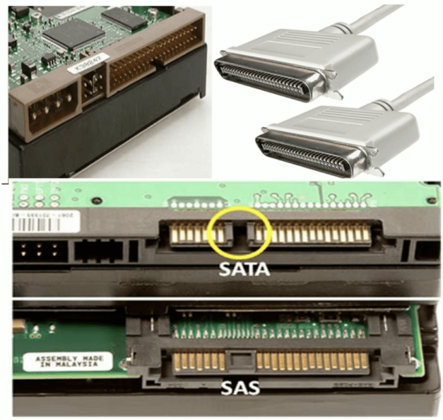
硬盘接口类型
IDE：133MB/s，并行接口，早期家用电脑
SCSI：640MB/s，并行接口，早期服务器
SATA：6Gbps，SATA数据端口与电源端口是分开的，即需要两条线，一条数据线，一条电源线
SAS：6Gbps，SAS是一整条线，数据端口与电源端口是一体化的，SAS中是包含供电线的，而 SATA中不包含供电线。SATA标准其实是 SAS标准的一个子集，二者可兼容，SATA硬盘可以插入SAS主板上，反之不行
USB：480MB/s
M.2：
注意：速度不是由单纯的接口类型决定，支持Nvme协议硬盘速度是最快的
服务器硬盘大小
LFF：3.5寸，一般见到的那种台式机硬盘的大小
SFF：Small Form Factor 小形状因数，2.5寸，注意不同于2.5寸的笔记本硬盘
L、S分别是大、小的意思，目前服务器或者盘柜采用sff规格的硬盘主要是考内虑增大单位密度内的磁盘容量、增强散热、减小功耗
机械硬盘和固态硬盘 机械硬盘（HDD）：Hard Disk Drive，即是传统普通硬盘，主要由：盘片，磁头，盘片转轴及控制电机，磁头控制器，数据转换器，接口，缓存等几个部分组成。机械硬盘中所有的盘片都装在一个旋转轴 上，每张盘片之间是平行的，在每个盘片的存储面上有一个磁头，磁头与盘片之间的距离比头发丝的直径还小，所有的磁头联在一个磁头控制器上，由磁头控制器负责各个磁头的运动。磁头可沿盘片的半径方向运 动，加上盘片每分钟几千转的高速旋转，磁头就可以定位在盘片的指定位置上进行数据的读写操作。数据通过磁头由电磁流来改变极性方式被电磁流写到磁盘上，也可以通过相反方式读取。硬盘为精密设备，进入硬盘的空气必须过滤
固态硬盘（SSD）：Solid State Drive，用固态电子存储芯片阵列而制成的硬盘，由控制单元和存储单元（FLASH芯片、DRAM芯片）组成。 固态硬盘在接口的规范和定义、功能及使用方法上与普通硬盘的完全相同，在产品外形和尺寸上也与普通硬盘一致
相较于HDD，SSD在防震抗摔、传输速率、功耗、重量、噪音上有明显优势，SSD传输速率性能是HDD 的2倍
相较于SSD，HDD在价格、容量占有绝对优势
硬盘有价，数据无价，目前SSD不能完全取代HHD
机械硬盘结构
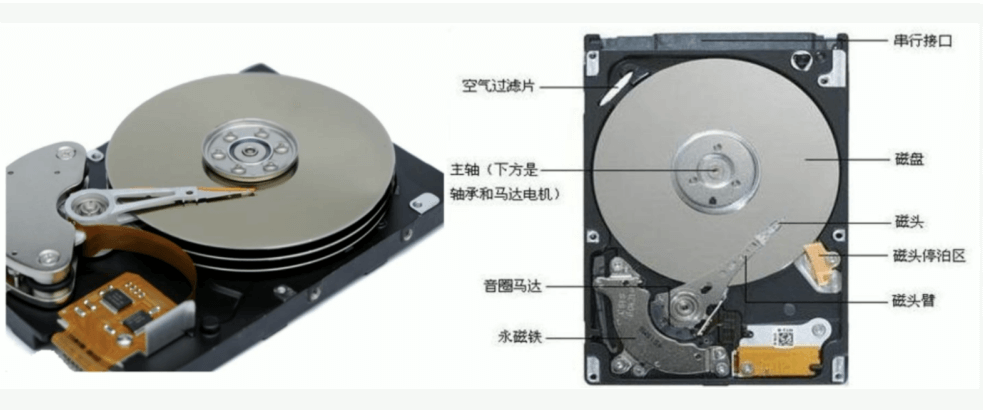
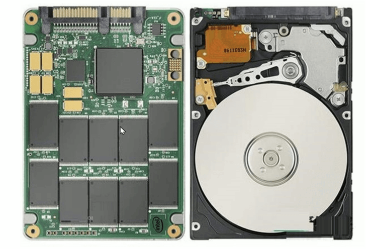
硬盘存储术语 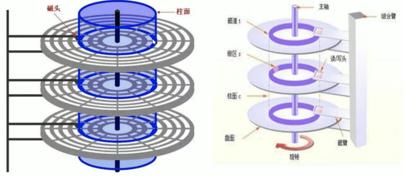
硬盘存储术语 CHS
术语
英文
描述
磁头
head
一个盘面对应一个磁头
磁道
track
盘面上的每一圈就是一个磁道
扇区
sector
把每个磁道按512bytes大小再进行划分，这就是扇区，每个磁道上的扇区数量是不一样的
柱面
cylinder
磁头移动的时候，是一起移动的，如果是6个盘面，则6个磁头对应的磁道是一致的，这就是柱面
CentOS7之后，就只显示扇区信息了
CentOS 5 之前版本 Linux 以柱面的整数倍划分分区，CentOS 6之后可以支持以扇区划分分区
范例：查看CHS信息
1 2 3 4 5 6 7 8 9 10 11 12 13 14 15 16 17 18 19 20 21 22 23 24 25 26 27 28 29 30 31 32 33 34 35 36 37 38 39 40 41 42 43 [root@rocky86 ~] Disk /dev/sda: 200 GiB, 214748364800 bytes, 419430400 sectors Units: sectors of 1 * 512 = 512 bytes Sector size (logical/physical): 512 bytes / 512 bytes I/O size (minimum/optimal): 512 bytes / 512 bytes Disklabel type : dos Disk identifier: 0x3475e2b0 Device Boot Start End Sectors Size Id Type /dev/sda1 * 2048 2099199 2097152 1G 83 Linux /dev/sda2 2099200 419430399 417331200 199G 8e Linux LVM [root@rocky86 ~] Disk /dev/sda: 200 GiB, 214748364800 bytes, 419430400 sectors Geometry: 255 heads, 2 sectors/track, 26108 cylinders Units: cylinders of 510 * 512 = 261120 bytes Sector size (logical/physical): 512 bytes / 512 bytes I/O size (minimum/optimal): 512 bytes / 512 bytes Disklabel type : dos Disk identifier: 0x3475e2b0 Device Boot Start End Cylinders Size Id Type /dev/sda1 * 5 4117 4113 1G 83 Linux /dev/sda2 4117 822413 818297 199G 8e Linux LVM [root@centos6 ~] Disk /dev/sda: 214.7 GB, 214748364800 bytes 255 heads, 63 sectors/track, 26108 cylinders Units = cylinders of 16065 * 512 = 8225280 bytes Sector size (logical/physical): 512 bytes / 512 bytes I/O size (minimum/optimal): 512 bytes / 512 bytes Disk identifier: 0x0006fc79 Device Boot Start End Blocks Id System /dev/sda1 * 1 131 1048576 83 Linux Partition 1 does not end on cylinder boundary. /dev/sda2 131 12879 102400000 83 Linux /dev/sda3 12879 19253 51200000 83 Linux /dev/sda4 19253 26109 55065600 5 Extended /dev/sda5 19254 19515 2097152 82 Linux swap / Solaris
范例：识别SSD和机械硬盘类型
1 2 3 4 5 6 7 8 9 10 11 12 13 14 15 16 17 18 19 20 [root@rocky86 ~] NAME ROTA sda 1 sr0 1 nvme0n1 0 nvme0n2 0 [root@rocky86 ~] nvme0n1 nvme0n2 sda sr0 [root@rocky86 ~] 0 0 1 1 [root@rocky86 ~] 1
范例: 测速
1 2 3 [root@ubuntu1804 ~] /dev/sda: Timing buffered disk reads: 1854 MB in 3.00 seconds = 617.80 MB/sec
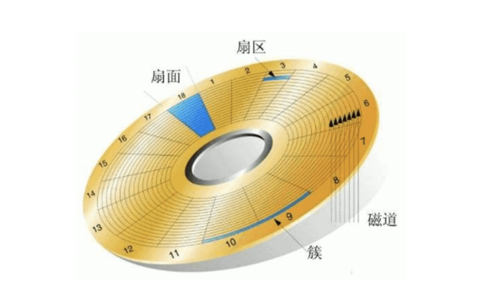
区位记录磁盘扇区结构ZBR（Zoned Bit Recording）
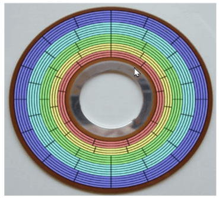
磁盘上寻址的两种方式
CHS
CHS采用 24 bit位寻址
其中前10位表示cylinder，中间8位表示head，后面6位表示sector
最大寻址空间 8 GB
LBA （logical block addressing）
LBA是一个整数，通过转换成 CHS 格式完成磁盘具体寻址
ATA-1规范中定义了28位寻址模式，以每扇区512位组来计算，ATA-1所定义的28位LBA上限达到 128 GiB。2002年ATA-6规范采用48位LBA，同样以每扇区512位组计算容量上限可达128 Petabytes
由于CHS寻址方式的寻址空间在大概8GB以内，所以在磁盘容量小于大概8GB时，可以使用CHS寻址方 式或是LBA寻址方式；在磁盘容量大 于大概8GB时，则只能使用LBA寻址方式
管理存储 使用磁盘空间过程
设备分区
创建文件系统
挂载新的文件系统
磁盘分区 为什么分区
优化I/O性能
实现磁盘空间配额限制
提高修复速度
隔离系统和程序
安装多个OS
采用不同文件系统
分区方式 两种分区方式：MBR，GPT
MBR分区 MBR：Master Boot Record，1982年，使用32位表示扇区数，分区不超过2T
划分分区的单位：
CentOS 5 之前按整柱面划分
CentOS 6 版本后可以按Sector划分
0磁道0扇区：512bytes
446bytes: boot loader 启动相关
64bytes：分区表，其中每16bytes标识一个分区
2bytes: 55AA，标识位
MBR分区中一块硬盘最多有4个主分区，也可以3主分区+1扩展(N个逻辑分区)
MBR分区：主和扩展分区对应的1–4，/dev/sda3，逻辑分区从5开始，/dev/sda5
MBR分区结构
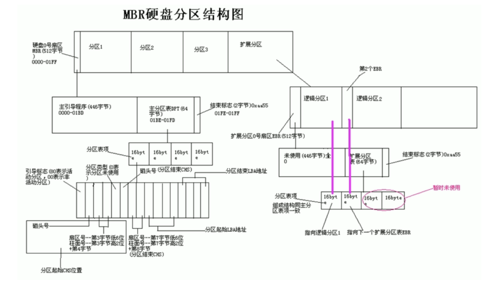
为什么不能超过4个主分区？
因为在 0磁道0扇区 上只留了64bytes空间存储分区表信息，而一个分区的关键信息要占用16个字节来存放
为什么单分区不能超2T？
一个分区信息占用16个字节，其中记录分区开始位置的空间为4个字节，记录分区结束位置的空间也是4个字节；
一个字节8位，4个字节是32位，则起始位最小值为32个0，结束位最大值为32个1，
所以一个分区，最大就是2的32次方个扇区，一个扇区512字节，则最大空间是 2^ 32*2^9 = 2^41 字节；
2^40 是T，那2^41就表示不超过2T
硬盘主引导记录MBR由4个部分组成
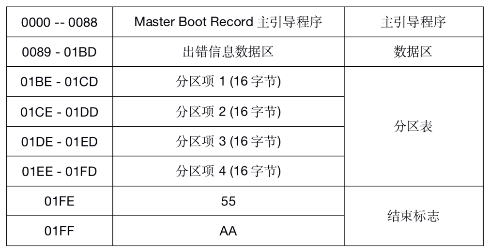
主引导程序（偏移地址0000H–0088H），它负责从活动分区中装载，并运行系统引导程序
出错信息数据区，偏移地址0089H–00E1H为出错信息，00E2H–01BDH全为0字节
分区表（DPT,Disk Partition Table）含4个分区项，偏移地址01BEH–01FDH,每个分区表项长16个 字节，共64字节为分区项1、分区项 2、分区项3、分区项4
结束标志字，偏移地址01FE–01FF的2个字节值为结束标志55AA
MBR中DPT结构（disk partition table 磁盘分区表）
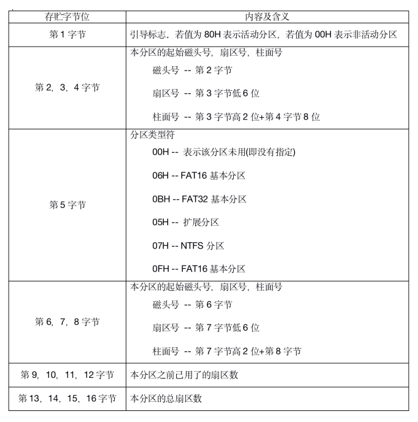
范例：查看分区表信息
范例: 备份MBR的分区表,并破坏后恢复
1 2 3 4 5 6 7 8 9 10 11 12 13 14 15 16 17 18 19 20 21 22 23 24 25 26 27 28 29 30 31 32 33 34 35 36 37 38 39 40 41 42 43 44 45 46 47 48 49 50 51 52 53 54 55 56 57 58 59 60 61 62 63 64 65 66 67 68 69 70 71 72 73 74 [root@rocky86 ~] Disk /dev/sda: 200 GiB, 214748364800 bytes, 419430400 sectors Units: sectors of 1 * 512 = 512 bytes Sector size (logical/physical): 512 bytes / 512 bytes I/O size (minimum/optimal): 512 bytes / 512 bytes Disklabel type : dos Disk identifier: 0x5b8e1003 Device Boot Start End Sectors Size Id Type /dev/sda1 * 2048 2099199 2097152 1G 83 Linux /dev/sda2 2099200 419430399 417331200 199G 8e Linux LVM [root@rocky86 ~] [root@rocky86 ~] -rw-r--r-- 1 root root 64 Jul 30 11:49 /tmp/dpt.img [root@rocky86 ~] [root@rocky86 ~] [root@rocky86 ~] 64+0 records in 64+0 records out 64 bytes copied, 0.00248682 s, 25.7 kB/s [root@rocky86 ~] [root@rocky86 ~] Disk /dev/sda: 200 GiB, 214748364800 bytes, 419430400 sectors Units: sectors of 1 * 512 = 512 bytes Sector size (logical/physical): 512 bytes / 512 bytes I/O size (minimum/optimal): 512 bytes / 512 bytes Disklabel type : dos Disk identifier: 0x3475e2b0 [root@rocky86 ~] NAME MAJ:MIN RM SIZE RO TYPE MOUNTPOINT sda 8:0 0 200G 0 disk ├─sda1 8:1 0 1G 0 part /boot └─sda2 8:2 0 199G 0 part ├─rl-root 253:0 0 70G 0 lvm / ├─rl-swap 253:1 0 2G 0 lvm [SWAP] └─rl-home 253:2 0 127G 0 lvm /home sr0 11:0 1 10.5G 0 rom [root@rocky86 ~] ifconfig ens160 10.0.0.158/24 scp 10.0.0.157:/root/dpt.img . dd if =dpt.img of=/dev/sda bs=1 seek=446reboot
问题：如何利用分区策略相同的另一台主机的分区表来还原和恢复当前主机破环的分区表？
GPT分区 GPT：GUID（Globals Unique Identifiers） partition table 支持128个分区，使用64位，支持8Z（ 512Byte/block ）64Z （ 4096Byte/block）
使用128位UUID(Universally Unique Identifier) 表示磁盘和分区，GPT分区表自动备份在头和尾两份， 并有CRC校验位
UEFI (Unified Extensible Firmware Interface 统一可扩展固件接口)硬件支持GPT，使得操作系统可以启动
GPT分区结构
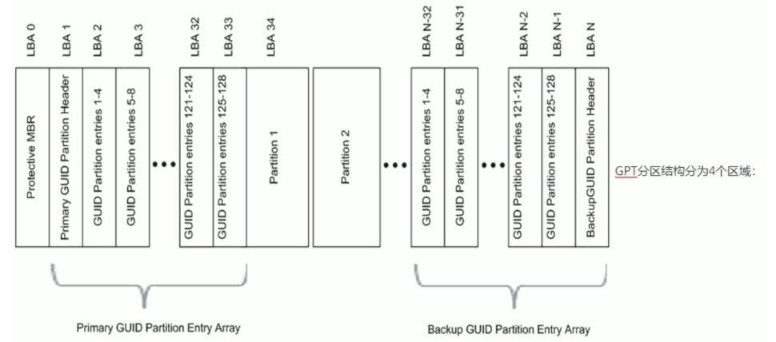
GPT分区结构分为4个区域：
范例：ubuntu默认使用gpt分区
1 2 3 4 5 6 7 8 9 10 11 12 13 root@ubuntu22:~ Disk /dev/sda: 200 GiB, 214748364800 bytes, 419430400 sectors Disk model: VMware Virtual S Units: sectors of 1 * 512 = 512 bytes Sector size (logical/physical): 512 bytes / 512 bytes I/O size (minimum/optimal): 512 bytes / 512 bytes Disklabel type : gpt Disk identifier: D7BA0964-556C-4442-87F5-9B57ACD27E8A Device Start End Sectors Size Type /dev/sda1 2048 4095 2048 1M BIOS boot /dev/sda2 4096 4198399 4194304 2G Linux filesystem /dev/sda3 4198400 419428351 415229952 198G Linux filesystem
BIOS和UEFI BIOS是固化在电脑主板上的程序，主要用于开机系统自检和引导操作系统。目前新式的电脑基本上都是 UEFI启动
BIOS（Basic Input Output System 基本输入输出系统）主要完成系统硬件自检和引导操作系统，操作系统开始启动之后，BIOS的任务就完成了。系统硬件自检：如果系统硬件有故障，主板上的扬声器就会发出长短不同的“滴滴”音，可以简单的判断硬件故障，比如“1长1短”通常表示内存故障，“1长3短”通常 表示显卡故障
BIOS在1975年就诞生了，使用汇编语言编写，当初只有16位，因此只能访问1M的内存，其中前640K称为基本内存，后384K内存留给开机和各类BIOS本身使用。BIOS只能识别到主引导记录（MBR）初始化的硬盘，最大支持2T的硬盘，4个主分区（逻辑分区中的扩展分区除 外），而目前普遍实现了64位系统，传统的BIOS已经无法满足需求了，这时英特尔主导的EFI就诞生了
EFI（Extensible Firmware Interface）可扩展固件接口，是 Intel 为PC 固件的体系结构、接口和服务提出的建议标准。其主要目的是为了提 供一组在 OS 加载之前（启动前）在所有平台上一致的、正确指定的启动服务，被看做是BIOS的继任者，或者理解为新版BIOS。
UEFI是由EFI1.10为基础发展起来的，它的所有者已不再是Intel，而是一个称作Unified EFI Form的国际组织
UEFI(Unified Extensible Firmware Interface)统一的可扩展固件接口， 是一种详细描述类型接口的标准。UEFI相当于一个轻量化的操作系统，提供了硬件和操作系统之间的一个接口，提供了图形化的操作界面。最关键的是引入了GPT分区表，支持2T以上的硬盘，硬盘分区不受限制
BIOS和UEFI区别
BIOS采用了16位汇编语言编写，只能运行在实模式（内存寻址方式由16位段寄存器的内容乘以16(10H) 当做段基地址，加上16位偏移地址 形成20位的物理地址）下，可访问的内存空间为1MB，只支持字符操作界面
UEFI采用32位或者64位的C语言编写，突破了实模式的限制，可以达到最大的寻址空间，支持图形操作界面，使用文件方式保存信息，支持 GPT分区启动，适合和较新的系统和硬件的配合使用
BIOS+MBR与UEFI+GPT
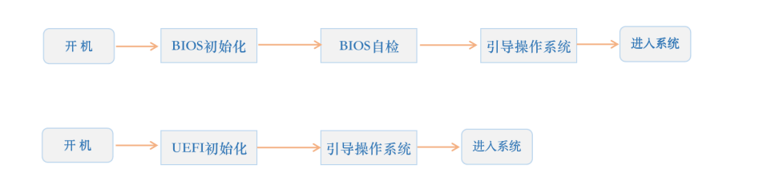
MSDN (Microsoft Developer Network) 指出，Windows 只能安装于 BIOS + MBR 或是 UEFI + GPT 的 组合上，而 BIOS + GPT 和 UEFI + MBR 是不允许的。但是 BIOS + GPT + GRUB 启动Linux 是可以的
管理分区 列出块设备
1 2 3 4 5 6 7 8 9 10 11 12 13 14 15 16 17 18 19 20 21 22 23 24 25 26 27 28 29 30 31 32 33 34 lsblk [options] [<device> ...] -a|--all -b|--bytes -d|--nodeps -e|--exclude <list> -f|--fs -i|--ascii -I|--include <list> -J|--json -l|--list -T|--tree -m|--perms -n|--noheadings -o|--output <list> -O|--output-all -p|--paths -P|--pairs -r|--raw -s|--inverse -S|--scsi -t|--topology NAME MAJ:MIN RM SIZE RO TYPE MOUNTPOINT
范例：
1 2 3 4 5 6 7 8 9 10 11 12 13 14 15 16 17 18 19 20 21 22 23 24 25 26 27 28 29 30 31 32 33 34 35 36 [root@rocky ~] NAME MAJ:MIN RM SIZE RO TYPE MOUNTPOINTS sr0 11:0 1 1.7G 0 rom nvme0n1 259:0 0 200G 0 disk ├─nvme0n1p1 259:1 0 200M 0 part /boot └─nvme0n1p2 259:2 0 126G 0 part ├─rl-root 253:0 0 100G 0 lvm / ├─rl-swap 253:1 0 1G 0 lvm [SWAP] └─rl-home 253:2 0 25G 0 lvm /home nvme0n2 259:3 0 20G 0 disk [root@rocky ~] NAME MAJ:MIN RM SIZE RO TYPE MOUNTPOINTS /dev/sr0 11:0 1 1.7G 0 rom /dev/nvme0n1 259:0 0 200G 0 disk ├─/dev/nvme0n1p1 259:1 0 200M 0 part /boot └─/dev/nvme0n1p2 259:2 0 126G 0 part ├─/dev/mapper/rl-root 253:0 0 100G 0 lvm / ├─/dev/mapper/rl-swap 253:1 0 1G 0 lvm [SWAP] └─/dev/mapper/rl-home 253:2 0 25G 0 lvm /home /dev/nvme0n2 259:3 0 20G 0 disk [root@rocky ~] NAME FSTYPE FSVER LABEL UUID FSAVAIL FSUSE% MOUNTPOINTS sr0 iso9660 Joliet Extension Rocky-9-4-x86_64-dvd 2024-05-05-01-12-25-00 nvme0n1 ├─nvme0n1p1 xfs 1e30bccb-53d6-4f26-bc88-018396bfae13 28.4M 85% /boot └─nvme0n1p2 LVM2_member LVM2 001 ebXpiz-oYJQ-R3cv-TPPn-iGch-rqNX-nyM96C ├─rl-root xfs 94a29cef-4cd4-4a0f-bd79-dd8bf658dcb5 98G 2% / ├─rl-swap swap 1 a16fb3ee-1e0d-44db-9a79-2622bd7eab3a [SWAP] └─rl-home xfs 663f89cc-4c97-435d-9c66-f992e2a458af 24.7G 1% /home nvme0n2
创建分区命令
1 2 3 4 5 fdisk gdisk parted partprobe
parted 命令 注意：parted的操作都是实时生效的，没有交互式确认
格式：
1 2 3 4 5 6 7 8 9 10 11 12 13 14 15 16 17 18 19 20 21 22 23 24 25 parted [OPTION]... [DEVICE [COMMAND [PARAMETERS]...]...] -l|--list -s|--script align-check TYPE N help [COMMAND] mklabel|mktable LABEL-TYPE mkpart PART-TYPE [FS-TYPE] START END name NUMBER NAME print [devices|free|list,all|NUMBER] quit rescue START END resizepart NUMBER END rm NUMBER select DEVICE disk_set FLAG STATE disk_toggle [FLAG] set NUMBER FLAG STATE toggle [NUMBER [FLAG]] unit UNIT version
范例:
1 2 3 4 5 6 7 8 9 10 11 12 13 14 15 16 17 18 19 20 21 22 23 24 25 26 27 28 29 30 31 32 33 34 35 36 37 38 39 40 41 42 43 44 45 46 47 48 49 50 51 52 53 54 55 56 57 58 59 60 61 62 63 64 65 66 67 68 69 70 71 72 73 74 75 76 77 78 79 80 81 [root@rocky86 ~] ...... ...... [root@rocky86 ~] Model: VMware, VMware Virtual S (scsi) Disk /dev/sdb: 21.5GB Sector size (logical/physical): 512B/512B Partition Table: msdos Disk Flags: Number Start End Size Type File system Flags [root@rocky86 ~] Warning: The existing disk label on /dev/sdb will be destroyed and all data on this disk will be lost. Do you want to continue ? Yes/No? yes Information: You may need to update /etc/fstab. [root@rocky86 ~] Model: VMware, VMware Virtual S (scsi) Disk /dev/sdb: 21.5GB Sector size (logical/physical): 512B/512B Partition Table: gpt Disk Flags: Number Start End Size File system Name Flags [root@rocky86 ~] Information: You may need to update /etc/fstab. [root@rocky86 ~] Model: VMware, VMware Virtual S (scsi) Disk /dev/sdb: 21.5GB Sector size (logical/physical): 512B/512B Partition Table: gpt Disk Flags: Number Start End Size File system Name Flags 1 1049kB 1001MB 1000MB xfs primary [root@rocky86 ~] Information: You may need to update /etc/fstab. [root@rocky86 ~] Model: VMware, VMware Virtual S (scsi) Disk /dev/sdb: 21.5GB Sector size (logical/physical): 512B/512B Partition Table: gpt Disk Flags: Number Start End Size File system Name Flags 1 1049kB 1001MB 1000MB xfs primary 2 1002MB 1102MB 99.6MB primary [root@rocky86 ~] Information: You may need to update /etc/fstab. [root@rocky86 ~] Model: VMware, VMware Virtual S (scsi) Disk /dev/sdb: 21.5GB Sector size (logical/physical): 512B/512B Partition Table: gpt Disk Flags: Number Start End Size File system Name Flags 1 1049kB 1001MB 1000MB xfs primary
分区工具fdisk和gdisk fdisk
1 2 3 4 5 6 7 8 9 10 11 12 13 14 15 16 17 18 19 20 21 22 23 24 25 26 27 28 29 30 31 32 33 34 35 36 37 38 fdisk [options] <disk> fdisk [options] -l [<disk>] gdisk [options] [device...] -b|--sector-size <size> -L|--color[=color] -l|--list -o|--output <list> -u|--units[=<unit>] -s|--getsz -b|--bytes N -t|--type type -C|--cylinders N -H|--heads N -S|--sectors N p t n d v u w q x gpt: Device Start End Sectors Size Type Type-UUID Attrs Name UUID dos: Device Start End Sectors Cylinders Size Type Id Attrs Boot End-C/H/S Start-C/H/S bsd: Slice Start End Sectors Cylinders Size Type Bsize Cpg Fsize sgi: Device Start End Sectors Cylinders Size Type Id Attrs sun: Device Start End Sectors Cylinders Size Type Id Flags
范例：显示分区列表
1 2 3 4 5 [root@rocky86 ~] [root@rocky86 ~]
范例：显示指定列
1 2 3 4 5 6 7 8 9 10 11 12 [root@rocky ~] Disk /dev/nvme0n1: 200 GiB, 214748364800 bytes, 419430400 sectors Disk model: VMware Virtual NVMe Disk Units: sectors of 1 * 512 = 512 bytes Sector size (logical/physical): 512 bytes / 512 bytes I/O size (minimum/optimal): 512 bytes / 512 bytes Disklabel type : dos Disk identifier: 0xafe9c023 Id Size Type 83 200M Linux 8e 126G Linux LVM
范例：查看内核是否已经识别新的分区
1 2 3 4 5 6 7 8 9 10 11 [root@rocky ~] major minor 259 0 209715200 nvme0n1 259 1 204800 nvme0n1p1 259 2 132128768 nvme0n1p2 259 3 20971520 nvme0n2 11 0 1786752 sr0 253 0 104857600 dm-0 253 1 1048576 dm-1 253 2 26214400 dm-2
CentOS 7,8 同步分区表
CentOS6 通知内核重新读取硬盘分区表
1 2 3 4 5 6 7 8 9 [root@centos6 ~] [root@centos6 ~]
范例: 非交互式创建分区
1 2 3 4 5 6 7 8 9 10 11 12 13 14 [root@rocky86 ~] [root@rocky86 ~] n p +1G w EOF [root@rocky86 ~] NAME MAJ:MIN RM SIZE RO TYPE MOUNTPOINT sdb 8:16 0 20G 0 disk ├─sdb1 8:17 0 1G 0 part └─sdb2 8:18 0 1G 0 part
gdisk
1 2 3 4 5 6 7 8 9 10 11 12 13 14 15 16 17 18 19 gdisk [ -l ] device b c d i l n o p q r s t v w x ?
文件系统 文件系统概念 文件系统是操作系统用于明确存储设备或分区上的文件的方法和数据结构；即在存储设备上组织文件的方法。
操作系统中负责管理和存储文件信息的软件结构称为文件管理系统，简称文件系统
从系统角度来看，文件系统是对文件存储设备的空间进行组织和分配，负责文件存储并对存入的文件进行保护和检索的系统。具体地说，它负责为用户建立文件，存入、读出、修改、转储文件，控制文件的 存取，安全控制，日志，压缩，加密等。
查看当前内核支持的文件系统：
1 2 3 4 5 6 7 8 9 10 11 12 13 14 15 [root@rocky86 ~] binfmt_misc.ko.xz cifs ext4 fuse jbd2 nfs nls squashfs cachefiles cramfs fat gfs2 lockd nfs_common overlayfs udf ceph dlm fscache isofs mbcache.ko.xz nfsd pstore xfs root@ubuntu22:~ 9p bfs coda f2fs hfs ksmbd nfsd omfs quota ubifs adfs binfmt_misc.ko cramfs fat hfsplus lockd nilfs2 orangefs reiserfs udf affs btrfs dlm freevxfs hpfs minix nls overlayfs romfs ufs afs cachefiles efs fscache isofs netfs ntfs pstore shiftfs.ko vboxsf autofs ceph erofs fuse jffs2 nfs ntfs3 qnx4 smbfs_common xfs befs cifs exfat gfs2 jfs nfs_common ocfs2 qnx6 sysv zonefs
查看当前系统可用的文件系统：
1 2 3 4 5 6 7 8 9 10 11 12 13 14 15 16 17 18 19 20 21 22 23 24 25 26 27 28 29 30 31 32 33 34 35 36 37 38 39 40 41 42 43 44 45 46 47 48 49 50 51 52 53 54 55 56 57 58 59 60 61 62 63 [root@rocky86 ~] nodev sysfs nodev tmpfs nodev bdev nodev proc nodev cgroup nodev cgroup2 nodev cpuset nodev devtmpfs nodev configfs nodev debugfs nodev tracefs nodev securityfs nodev sockfs nodev bpf nodev pipefs nodev ramfs nodev hugetlbfs nodev devpts nodev autofs nodev pstore nodev mqueue fuseblk nodev fuse nodev fusectl xfs nodev rpc_pipefs root@ubuntu22:~ nodev sysfs nodev tmpfs nodev bdev nodev proc nodev cgroup nodev cgroup2 nodev cpuset nodev devtmpfs nodev configfs nodev debugfs nodev tracefs nodev securityfs nodev sockfs nodev bpf nodev pipefs nodev ramfs nodev hugetlbfs nodev devpts ext3 ext2 ext4 squashfs vfat nodev ecryptfs fuseblk nodev fuse nodev fusectl nodev mqueue nodev pstore btrfs nodev autofs
当前系统支持的文件系统和当前系统可用的文件系统是两回事，modules 中的文件系统在编译时选择了才是可用的，而可用的文件系统包含了默认支持的文件系统，如果需要使用某个文件系统，而该文件系统又不在proc 中，则需要重新编译内核；
各种文件系统：https://en.wikipedia.org/wiki/Comparison_of_file_systems
帮助：man 5 fs
文件系统类型 Linux 常用文件系统
文件系统
备注
ext2
Extended file system 适用于那些分区容量不是太大，更新也不频繁的情况，例如 /boot 分 区
ext3
ext2 的改进版本，其支持日志功能，能够帮助系统从非正常关机导致的异常中恢复
ext4
ext 文件系统的最新版。有很多新的特性，包括纳秒级时间戳、巨型文件 (16TB)、最大1EB的文件系统，以及速度的提升
xfs
SGI，支持最大8EB的文件系统
swap
交换分区专用的文件系统
iso9660
光盘文件系统
btrFS
Oracle公司开发
reiserFS
最有潜力的文件系统。2008年，由于ReiserFS的创始人Hans Reiser的谋杀罪名成立，导致废弃
Windows 常用文件系统
文件系统
备注
FAT32
最多只能支持16TB的文件系统和4GB的文件
NTFS
最多只能支持16EB的文件系统和16EB的文件
extFAT
Unix常用文件系统
文件系统
备注
FFS(fast)
UFS(unix)
UFS是UNIX文件系统的简称，几乎是大部分UNIX类操作系统默认的基于磁盘的文件系统
JFS2
网络文件系统
文件系统
备注
NFS
Network File System，即网络文件系统
CIFS
集群文件系统
文件系统
备注
GFS2
基于X86_64，最大文件系统可到100TB
OCFS2(oracle)
分布式文件系统
文件系统
备注
fastdFS
ceph
不仅仅是一个文件系统，还是一个有企业级功能的对象存储生态环境
mooseFS
mogileFS
glusterFS
Lustre
RAW
裸文件系统,未经处理或者未经格式化产生的文件系统
常用的文件系统特性：
FAT32
最多只能支持16TB的文件系统和4GB的文件
NTFS
最多只能支持16EB的文件系统和16EB的文件
EXT3
最多只能支持32TB的文件系统和2TB的文件，实际只能容纳2TB的文件系统和16GB的文件
Ext3目前只支持32000个子目录
Ext3文件系统使用32位空间记录块数量和 inode数量
当数据写入到Ext3文件系统中时，Ext3的数据块分配器每次只能分配一个4KB的块
EXT4
EXT4是Linux系统下的日志文件系统，是EXT3文件系统的后继版本
Ext4的文件系统容量达到1EB，而支持单个文件则达到16TB
理论上支持无限数量的子目录
Ext4文件系统使用64位空间记录块数量和 inode数量
Ext4的多块分配器支持一次调用分配多个数据块
修复速度更快
XFS
根据所记录的日志在很短的时间内迅速恢复磁盘文件内容
用优化算法，日志记录对整体文件操作影响非常小
是一个全64-bit的文件系统，最大可以支持8EB的文件系统，而支持单个文件则达到8EB
能以接近裸设备I/O的性能存储数据
文件系统的组成部分
内核中的模块：ext4, xfs, vfat
Linux的虚拟文件系统：VFS
用户空间的管理工具：mkfs.ext4, mkfs.xfs,mkfs.vfat
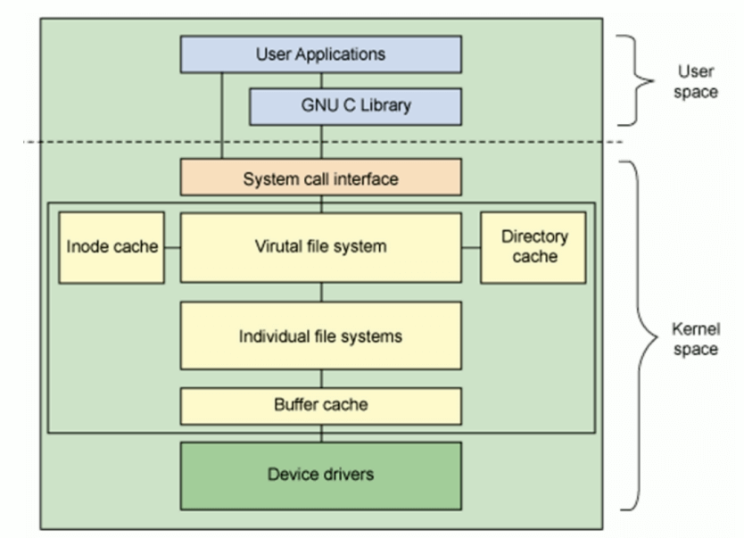
文件系统选择管理 创建文件系统 mkfs
1 2 3 4 5 6 7 8 9 10 11 12 13 14 mkfs [options] [-t <type >] [fs-options] <device> [<size>] -t|--type =model -b -L LABEL -V|--verbose -j -i N -N N -I N -m N -O FEATURE[,...] -O ^FEATURE
范例：
1 2 3 4 5 6 7 8 9 10 11 12 13 14 15 16 17 18 19 20 21 22 23 24 25 26 27 [root@rocky86 ~] mke2fs 1.45.6 (20-Mar-2020) Creating filesystem with 262144 4k blocks and 65536 inodes Filesystem UUID: 80402d09-2ec9-423a-a13a-fb25df9774da Superblock backups stored on blocks: 32768, 98304, 163840, 229376 Allocating group tables: done Writing inode tables: done Creating journal (8192 blocks): done Writing superblocks and filesystem accounting information: done [root@rocky86 ~] meta-data=/dev/sdc2 isize=512 agcount=4, agsize=131072 blks = sectsz=512 attr=2, projid32bit=1 = crc=1 finobt=1, sparse=1, rmapbt=0 = reflink=1 bigtime=0 inobtcount=0 data = bsize=4096 blocks=524288, imaxpct=25 = sunit=0 swidth=0 blks naming =version 2 bsize=4096 ascii-ci=0, ftype=1 log =internal log bsize=4096 blocks=2560, version=2 = sectsz=512 sunit=0 blks, lazy-count=1 realtime =none extsz=4096 blocks=0, rtextents=0
范例：查看
1 2 3 4 5 6 7 8 9 10 11 12 13 14 15 16 17 18 19 20 21 22 23 24 25 26 27 28 29 30 [root@rocky86 ~] NAME FSTYPE LABEL UUID MOUNTPOINT sda ├─sda1 xfs 94a73757-555a-4d2b-8153-f54277c4c50d /boot └─sda2 LVM2_member qLmfIa-YvfP-3Du3-dwVG-a0qM-eZRR-uP3P80 ├─rl-root xfs bd1ab1fd-ee1c-4908-a7b3-e83a170adda9 / ├─rl-swap swap c6f13a3f-a2f3-4ba7-a591-879f476fdd1a [SWAP] └─rl-home xfs 22a09cff-b3f2-48c5-b251-c1c4af9b11b7 /home sdb ├─sdb1 ├─sdb2 ├─sdb5 └─sdb6 sdc ├─sdc1 ext4 a7751b8e-da27-447e-9466-79127e0850af └─sdc2 xfs 205ecdf1-1f0e-495d-a1ab-2f74b6ab98a0 sr0 iso9660 Rocky-8-6-x86_64-dvd 2022-05-15-21-06-44-00 [root@rocky86 ~] Filesystem 1K-blocks Used Available Use% Mounted on devtmpfs 883748 0 883748 0% /dev tmpfs 914116 0 914116 0% /dev/shm tmpfs 914116 9536 904580 2% /run tmpfs 914116 0 914116 0% /sys/fs/cgroup /dev/mapper/rl-root 73364480 11770668 61593812 17% / /dev/mapper/rl-home 133071376 961128 132110248 1% /home /dev/sda1 1038336 260336 778000 26% /boot tmpfs 182820 12 182808 1% /run/user/42 tmpfs 182820 0 182820 0% /run/user/0
mke2fs
ext系列文件系统专用管理工具
1 2 3 4 5 6 7 8 9 10 11 12 13 14 15 mke2fs [OPTION]... DEVICE -t -b -L LABEL -j -i N -N N -I N -m N -O FEATURE[,...] -O ^FEATURE
查看和管理分区信息 blkid
查看块设备属性信息
1 2 3 4 5 6 blkid [OPTION]... [DEVICE] -U UUID -L LABEL
范例：
1 2 3 4 5 6 7 8 9 10 11 12 13 14 15 16 17 18 19 20 21 [root@rocky86 ~] /dev/sdc1: UUID="a7751b8e-da27-447e-9466-79127e0850af" BLOCK_SIZE="4096" TYPE="ext4" PARTLABEL="Linux filesystem" PARTUUID="45ac71ce-1e51-4e92-ab43-7e7c71bab06a" /dev/sr0: BLOCK_SIZE="2048" UUID="2022-05-15-21-06-44-00" LABEL="Rocky-8-6-x86_64-dvd" TYPE="iso9660" PTUUID="6b8b4567" PTTYPE="dos" /dev/sda1: UUID="94a73757-555a-4d2b-8153-f54277c4c50d" BLOCK_SIZE="512" TYPE="xfs" PARTUUID="3475e2b0-01" /dev/sda2: UUID="qLmfIa-YvfP-3Du3-dwVG-a0qM-eZRR-uP3P80" TYPE="LVM2_member" PARTUUID="3475e2b0-02" /dev/mapper/rl-root: UUID="bd1ab1fd-ee1c-4908-a7b3-e83a170adda9" BLOCK_SIZE="512" TYPE="xfs" /dev/mapper/rl-swap: UUID="c6f13a3f-a2f3-4ba7-a591-879f476fdd1a" TYPE="swap" /dev/mapper/rl-home: UUID="22a09cff-b3f2-48c5-b251-c1c4af9b11b7" BLOCK_SIZE="512" TYPE="xfs" /dev/sdc2: UUID="205ecdf1-1f0e-495d-a1ab-2f74b6ab98a0" BLOCK_SIZE="512" TYPE="xfs" PARTLABEL="Linux filesystem" PARTUUID="26bf9878-a529-4a07-be62-f854f86941da" /dev/sdb1: PARTUUID="a5cc5319-01" /dev/sdb5: PARTUUID="a5cc5319-05" /dev/sdb6: PARTUUID="a5cc5319-06" [root@rocky86 ~] /dev/mapper/rl-swap
e2label
管理ext系列文件系统的LABEL
findfs
查找分区
1 2 findfs [options] LABEL=<label> findfs [options] UUID=<uuid>
范例：
1 2 [root@centos8 ~] /dev/sda2
范例:
1 2 [root@centos8 ~] /dev/sda3
tune2fs
重新设定ext系列文件系统可调整参数的值
1 2 3 4 5 6 7 8 9 10 tune2fs [OPTION]... [DEVICE] -l -L LABEL -m N -j -O -o -U UUID
范例：
1 2 3 4 5 6 7 8 9 10 11 12 13 [root@rocky86 ~] tune2fs 1.45.6 (20-Mar-2020) Filesystem volume name: <none> Last mounted on: <not available> Filesystem UUID: a7751b8e-da27-447e-9466-79127e0850af Filesystem magic number: 0xEF53 Filesystem revision Filesystem features: has_journal ext_attr resize_inode dir_index filetype extent 64bit flex_bg sparse_super large_file huge_file dir_nlink extra_isize metadata_csum Filesystem flags: signed_directory_hash Default mount options: user_xattr acl Filesystem state: clean ......
dumpe2fs
显示ext文件系统信息，将磁盘块分组管理
1 dumpe2fs [OPTION]... [DEVICE]
范例：
1 2 3 4 5 6 7 8 9 10 11 12 13 14 15 16 17 [root@rocky86 ~] dumpe2fs 1.45.6 (20-Mar-2020) Filesystem volume name: <none> Last mounted on: <not available> Filesystem UUID: a7751b8e-da27-447e-9466-79127e0850af ...... [root@rocky86 ~] dumpe2fs 1.45.6 (20-Mar-2020) Filesystem volume name: <none> Last mounted on: <not available> Filesystem UUID: a7751b8e-da27-447e-9466-79127e0850af Filesystem magic number: 0xEF53 Filesystem revision ......
xfs_info
显示已挂载的 xfs 文件系统信息
1 xfs_info mountpoint|devname
范例：
1 2 3 4 5 6 7 8 9 10 11 [root@centos8 ~] meta-data=/dev/sda7 isize=512 agcount=4, agsize=131072 blks = sectsz=512 attr=2, projid32bit=1 = crc=1 finobt=1, sparse=1, rmapbt=0 = reflink=1 data = bsize=4096 blocks=524288, imaxpct=25 = sunit=0 swidth=0 blks naming =version 2 bsize=4096 ascii-ci=0, ftype=1 log =internal log bsize=4096 blocks=2560, version=2 = sectsz=512 sunit=0 blks, lazy-count=1 realtime =none extsz=4096 blocks=0, rtextents=0
文件系统检测和修复 文件系统夹故障常发生于死机或者非正常关机之后，挂载为文件系统标记为“no clean”
注意：一定不要在挂载状态下执行下面命令修复
fsck
fsck: File System Check
1 2 3 4 5 fsck [options] -- [fs-options] [<filesystem> ...] -a -r
范例：
1 2 3 4 5 6 7 8 [root@rocky86 ~] e2fsck 1.45.6 (20-Mar-2020) /dev/sdc1: clean, 11/65536 files, 12955/262144 blocks [root@rocky86 ~] fsck from util-linux 2.32.1 e2fsck 1.45.6 (20-Mar-2020) /dev/sdc1: clean, 11/65536 files, 12955/262144 blocks
e2fsck
ext系列文件专用的检测修复工具
1 2 3 4 5 6 e2fsck [options] -- [fs-options] [<filesystem> ...] -y -f -p
xfs_repair
xfs文件系统专用检测修复工具
1 2 3 4 5 6 xfs_repair [options] device -f -n -d
范例：修改破坏的ext文件系统
1 2 3 4 5 6 7 8 9 10 11 12 13 14 15 16 17 18 19 20 21 22 23 24 25 26 27 28 29 30 31 32 33 34 35 36 37 38 39 40 41 42 43 44 45 46 47 48 49 50 51 52 53 54 55 56 57 58 59 60 61 62 63 64 65 66 67 68 69 70 71 72 73 74 75 76 77 78 79 80 81 82 83 84 85 86 87 88 89 90 91 92 93 94 95 96 97 98 99 100 101 102 103 104 105 106 107 108 109 110 111 112 113 114 115 116 117 118 119 120 121 122 123 124 125 126 127 128 129 130 131 132 133 134 135 136 137 138 139 140 141 142 143 144 145 146 147 148 [root@centos8 ~] [root@centos8 ~] [root@centos8 ~] [root@centos8 ~] f1 f2 lost+found [root@centos8 ~] 1+0 records in 1+0 records out 1048576 bytes (1.0 MB, 1.0 MiB) copied, 0.00128317 s, 817 MB/s [root@centos8 ~] [root@centos8 ~] tune2fs 1.44.6 (5-Mar-2019) tune2fs: Bad magic number in super-block while trying to open /dev/sdb2 [root@centos8 ~] Filesystem 1K-blocks Used Available Use% Mounted on devtmpfs 391676 0 391676 0% /dev tmpfs 408092 0 408092 0% /dev/shm tmpfs 408092 5824 402268 2% /run tmpfs 408092 0 408092 0% /sys/fs/cgroup /dev/sda2 104806400 4381120 100425280 5% / /dev/sda3 52403200 398584 52004616 1% /data /dev/sda1 999320 130848 799660 15% /boot tmpfs 81616 0 81616 0% /run/user/0 /dev/sdb2 73786976294838107984 73786976294836115464 1976136 100% /mnt [root@centos8 ~] [root@centos8 ~] e2fsck 1.44.6 (5-Mar-2019) ext2fs_open2: Bad magic number in super-block e2fsck: Superblock invalid, trying backup blocks... test was not cleanly unmounted, check forced.Resize inode not valid. Recreate<y>? yes Pass 1: Checking inodes, blocks, and sizes Pass 2: Checking directory structure Pass 3: Checking directory connectivity Pass 4: Checking reference counts Pass 5: Checking group summary information Block bitmap differences: +(98304--98560) +(163840--164096) +(229376--229632) + (294912--295168) Fix<y>? yes Free blocks count wrong for group Fix<y>? test : e2fsck canceled.test : ***** FILE SYSTEM WAS MODIFIED *****[root@centos8 ~] e2fsck 1.44.6 (5-Mar-2019) test was not cleanly unmounted, check forced.Pass 1: Checking inodes, blocks, and sizes Pass 2: Checking directory structure Pass 3: Checking directory connectivity Pass 4: Checking reference counts Pass 5: Checking group summary information Free blocks count wrong for group Fix? yes Free blocks count wrong for group Fix? yes Free blocks count wrong (498131, counted=498130). Fix? yes Free inodes count wrong for group Fix? yes Free inodes count wrong (131061, counted=131059). Fix? yes Padding at end of inode bitmap is not set . Fix? yes test : ***** FILE SYSTEM WAS MODIFIED *****test : 13/131072 files (0.0% non-contiguous), 26158/524288 blocks[root@centos8 ~] tune2fs 1.44.6 (5-Mar-2019) Filesystem volume name: test Last mounted on: <not available> Filesystem UUID: c44b3a40-70dc-44d2-8427-b8094f73940a Filesystem magic number: 0xEF53 Filesystem revision Filesystem features: has_journal ext_attr resize_inode dir_index filetype extent 64bit flex_bg sparse_super large_file huge_file dir_nlink extra_isize metadata_csum Filesystem flags: signed_directory_hash Default mount options: user_xattr acl Filesystem state: clean Errors behavior: Continue Filesystem OS type : Linux Inode count: 131072 Block count: 524288 Reserved block count: 26214 Free blocks: 498130 Free inodes: 131059 First block: 0 Block size: 4096 Fragment size: 4096 Group descriptor size: 64 Reserved GDT blocks: 255 Blocks per group: 32768 Fragments per group: 32768 Inodes per group: 8192 Inode blocks per group: 512 Flex block group size: 16 Filesystem created: Mon Apr 13 16:10:06 2020 Last mount time: n/a Last write time: Mon Apr 13 16:57:21 2020 Mount count: 0 Maximum mount count: -1 Last checked: Mon Apr 13 16:57:21 2020 Check interval: 0 (<none>) Lifetime writes: 130 MB Reserved blocks uid: 0 (user root) Reserved blocks gid: 0 (group root) First inode: 11 Inode size: 256 Required extra isize: 32 Desired extra isize: 32 Journal inode: 8 Default directory hash : half_md4 Directory Hash Seed: 8d4f1f25-ab7c-4fb2-b45d-3d23974edede Journal backup: inode blocks Checksum type : crc32c Checksum: 0x7f222e49 [root@centos8 ~] [root@centos8 ~] f1 f2 lost+found [root@centos8 ~] UUID=f7f53add-b184-4ddc-8d2c-5263b84d1e15 / xfs defaults 0 0 UUID=5c2216e3-ae34-444e-aa60-83cbaebb47e7 /boot ext4 defaults 1 2 UUID=9a2293a8-9277-4b18-bae1-498e0b9da145 /data xfs defaults 0 0 UUID=eebe3bc7-6d52-4ad9-86aa-916f1a123fd4 swap swap defaults 0 0
挂载 挂载：将额外文件系统与根文件系统某现存的目录建立起关联关系，进而使得此目录做为其它文件访问入口的行为
卸载：为解除此关联关系的过程
把设备关联挂载点：mount Point
挂载点下原有文件在挂载完成后会被临时隐藏，因此，挂载点目录一般为空。进程正在使用中的设备无法被卸载
挂载文件系统 mount 格式：
1 2 3 4 5 mount [-lhV] mount -a [options] mount [options] [--source ] <source > | [--target] <directory> mount [options] <source > <directory> mount <operation> <mountpoint> [<target>]
device：指明要挂载的设备
设备文件：例如:/dev/sda5
卷标：-L ‘LABEL’, 例如 -L ‘MYDATA’
UUID： -U ‘UUID’：例如 -U ‘0c50523c-43f1-45e7-85c0-a126711d406e’
伪文件系统名称：proc, sysfs, devtmpfs, configfs
mountpoint ：挂载点目录必须事先存在，建议使用空目录
挂载规则:
一个挂载点同一时间只能挂载一个设备
一个挂载点同一时间挂载了多个设备，只能看到最后一个设备的数据，其它设备上的数据将被隐藏
一个设备可以同时挂载到多个挂载点
通常挂载点一般是已存在空的目录
mount 常用命令选项
1 2 3 4 5 6 7 8 9 10 11 12 13 14 15 16 17 18 19 20 21 22 23 24 25 26 27 28 29 30 31 32 33 34 35 36 37 38 39 40 41 42 43 44 45 46 47 48 49 -a|--all -B|--bind -c|--no-canonicalize -f|--fake -F|--fork -T|--fstab path -i|--internal-only -l|--show-labels -n|--no-mtab -o|--options o1,o2 -O|--test-opts o1,o2 -r|--read-only -t|--types --source device --target mountpoint -v|--verbose -w|--rw|--read-write -L LABEL -U UUID async sync atime/noatime diratime/nodiratime auto/noauto exec /noexec dev/nodev suid/nosuid remount ro/rw user/nouser acl/noacl loop _netdev defaults -L|--label label -U|--uuid uuid LABEL=label UUID=uuid PARTLABEL=label PARTUUID=uuid device directory file
范例：
1 2 3 4 5 6 7 8 9 10 11 12 13 14 15 16 17 18 19 20 21 22 23 24 [root@rocky86 ~] NAME FSTYPE LABEL UUID MOUNTPOINT sdc ├─sdc1 ext4 a7751b8e-da27-447e-9466-79127e0850af └─sdc2 xfs 205ecdf1-1f0e-495d-a1ab-2f74b6ab98a0 [root@rocky86 ~] [root@rocky86 ~] [root@rocky86 ~] [root@rocky86 ~] NAME FSTYPE LABEL UUID MOUNTPOINT sdc ├─sdc1 ext4 a7751b8e-da27-447e-9466-79127e0850af /sdc1 └─sdc2 xfs 205ecdf1-1f0e-495d-a1ab-2f74b6ab98a0 /sdc2 [root@rocky86 ~] [root@rocky86 ~] cp : cannot create regular file '/sdc2/fstab' : Read-only file system
卸载文件系统 umount 卸载时：可使用设备，也可以使用挂载点
格式
1 2 3 umount [-hV] umount -a [options] umount [options] <source > | <directory>
范例：
1 2 3 4 5 6 7 8 9 10 11 12 13 14 15 16 17 18 19 20 21 [root@rocky86 ~] NAME FSTYPE LABEL UUID MOUNTPOINT sdc ├─sdc1 ext4 a7751b8e-da27-447e-9466-79127e0850af /sdc1 └─sdc2 xfs 205ecdf1-1f0e-495d-a1ab-2f74b6ab98a0 /sdc2 [root@rocky86 ~] [root@rocky86 ~] [root@rocky86 ~] NAME FSTYPE LABEL UUID MOUNTPOINT sdc ├─sdc1 ext4 a7751b8e-da27-447e-9466-79127e0850af └─sdc2 xfs 205ecdf1-1f0e-495d-a1ab-2f74b6ab98a0
查看挂载情况 查看挂载
1 2 3 mount cat /etc/mtab cat /proc/mounts
范例：
1 2 3 4 5 6 7 8 9 10 11 12 13 14 15 16 17 [root@rocky86 ~] sysfs on /sys type sysfs (rw,nosuid,nodev,noexec,relatime) proc on /proc type proc (rw,nosuid,nodev,noexec,relatime) devtmpfs on /dev type devtmpfs (rw,nosuid,size=883748k,nr_inodes=220937,mode=755) ...... [root@rocky86 ~] sysfs /sys sysfs rw,nosuid,nodev,noexec,relatime 0 0 proc /proc proc rw,nosuid,nodev,noexec,relatime 0 0 devtmpfs /dev devtmpfs rw,nosuid,size=883748k,nr_inodes=220937,mode=755 0 0 ...... [root@rocky86 ~] sysfs /sys sysfs rw,nosuid,nodev,noexec,relatime 0 0 proc /proc proc rw,nosuid,nodev,noexec,relatime 0 0 devtmpfs /dev devtmpfs rw,nosuid,size=883748k,nr_inodes=220937,mode=755 0 0 ......
查看挂载点情况
1 2 3 4 findmnt [options] findmnt [options] <device> | <mountpoint> findmnt [options] <device> <mountpoint> findmnt [options] [--source <device>] [--target <path> | --mountpoint <dir >]
范例：
1 2 3 4 5 6 7 8 [root@rocky86 ~] ...... [root@rocky86 ~] TARGET SOURCE FSTYPE OPTIONS /sdc1 /dev/sdc1 ext4 rw,relatime
查看正在访问指定文件系统的进程
1 2 lsof MOUNT_POINT fuser -v MOUNT_POINT
终止所有在正访问指定的文件系统的进程
持久挂载 将挂载保存到 /etc/fstab 中可以下次开机时，自动启用挂载
每行定义一个要挂载的文件系统,，其中包括共 6 项
要挂载的设备或伪文件系统设备文件(LABEL=label | UUID=uuid | /dev/sda1)
挂载点：必须是事先存在的目录
文件系统类型：ext4，xfs，iso9660，nfs，none
挂载选项：defaults ，acl，bind，ro，rw 等
转储频率：0 不做备份; 1 每天转储; 2 每隔一天转储
fsck检查的文件系统的顺序：0 不自检 ; 1 首先自检，一般只有rootfs才用；2 非rootfs使用
1 2 3 4 5 6 7 8 9 10 11 12 13 14 15 [root@rocky86 ~] /dev/mapper/rl-root / xfs defaults 0 0 UUID=94a73757-555a-4d2b-8153-f54277c4c50d /boot xfs defaults 0 0 /dev/mapper/rl-home /home xfs defaults 0 0 /dev/mapper/rl-swap none swap defaults 0 0
添加新的挂载项，需要执行下面命令生效
此命令只针对文件新增行或删除行有效，如果在中间修改了挂载选项，则此命令无效
修改文件前后对比
如果 /etc/fstab 中的分区UUID出错，则会无法进系统
解决方案：
centos7,centos8会自动进入 emergency 模式，输入root密码后，再修改 /etc/fstab，然后重启即可
centos6中除了修改为正确之外，还可以将/etc/fstab 文件中错误行最后一项设置为0，即不检查
重新挂载 修改了/etc/fstab 文件中的挂载规则，无法通过mount -a 生效，要执行执行挂载
1 mount -o remount MOUNTPOINT
处理交换文件和分区 swap 介绍 swap交换分区是系统RAM的补充，swap 分区支持虚拟内存。当没有足够的 RAM 保存系统处理的数据时会将数据写入 swap 分区，当系统 缺乏 swap 空间时，内核会因 RAM 内存耗尽而终止进程。
配置过多 swap 空间会造成存储设备处于分配状态但闲置，造成浪费，过多 swap 空间还会掩盖内存泄露
注意：为优化性能，可以将swap 分布存放，或高性能磁盘存放
Redhat 官方推荐推荐系统 swap 空间
1 https://docs.redhat.com/zh_hans/documentation/red_hat_enterprise_linux/7/html/installation_guide/sect-disk-partitioning-setup-ppc
系统中的 RAM 量
推荐的 swap 空间
允许休眠的建议 swap 空间大小
低于 2 GB
RAM 量的2倍数
RAM 容量的三倍
2 GB - 8 GB
等于 RAM 量
RAM 量的倍数
8 GB - 64 GB
4 GB 到 RAM 容量的 0.5 倍
RAM 容量的 1.5 倍
8 GB - 64 GB
独立负载（至少 4GB）
不建议使用休眠功能
范例：
1 2 3 4 5 6 7 8 9 10 11 12 13 [root@rocky86 ~] total used free shared buff/cache available Mem: 1.7Gi 599Mi 717Mi 10Mi 468Mi 1.0Gi Swap: 2.0Gi 0B 2.0Gi [root@rocky86 ~] dd : memory exhausted by input buffer of size 32212254720 bytes (30 GiB)[root@rocky86 ~] 0+1 records in 0+1 records out 2147479552 bytes (2.1 GB, 2.0 GiB) copied, 22.6783 s, 94.7 MB/s
交换分区实现过程
创建交换分区或者文件
使用mkswap写入特殊签名
在/etc/fstab文件中添加适当的条目
使用swapon -a 激活交换空间
启用swap分区
1 2 3 4 5 6 7 8 9 10 11 12 13 14 15 16 17 18 19 20 21 22 23 24 25 26 27 28 29 30 31 32 33 34 35 swapon [options] [<spec>] -a|--all -d|--discard[=policy] -e|--ifexists -f|--fixpgsz -o|--options list -p|--priority N -s|--summary --show[=columns] --noheadings --raw --bytes -v|--verbose -L label -U uuid LABEL=label UUID=uuid PARTLABEL=label PARTUUID=uuid device filename NAME TYPE SIZE USED PRIO UUID LABEL
禁用swap分区
1 2 3 4 5 6 7 8 9 10 11 12 13 swapoff [options] [<spec>] -a|--all -v|--verbose -L label -U uuid LABEL=label UUID=uuid device filename
创建swap分区
1 2 3 4 5 6 7 8 9 10 11 12 13 14 15 16 17 18 19 20 21 22 23 24 25 26 27 28 [root@rocky86 ~] Setting up swapspace version 1, size = 2 GiB (2147479552 bytes) no label, UUID=1fe6ce0f-e49a-47e0-956e-48be13606d9c [root@rocky86 ~] /dev/sdb7: UUID="1fe6ce0f-e49a-47e0-956e-48be13606d9c" TYPE="swap" PARTUUID="a5cc5319-07" [root@rocky86 ~] [root@rocky86 ~] [root@rocky86 ~] total used free shared buff/cache available Mem: 1.7Gi 435Mi 1.2Gi 1.0Mi 127Mi 1.2Gi Swap: 4.0Gi 240Mi 3.8Gi [root@rocky86 ~] Filename Type Size Used Priority /dev/dm-1 partition 2125820 0 -2 /dev/sdb7 partition 2097148 0 -3
查看swap分区
Priority越大，优先级越高，会被优先使用
1 2 3 4 5 6 7 8 9 10 [root@rocky86 ~] Filename Type Size Used Priority /dev/dm-1 partition 2125820 0 -2 /dev/sdb7 partition 2097148 0 -3 [root@rocky86 ~] Filename Type Size Used Priority /dev/dm-1 partition 2125820 0 -2 /dev/sdb7 partition 2097148 0 -3
修改swap优先级
可以指定swap分区0到32767的优先级，值越大优先级越高
如果用户没有指定，那么核心会自动给swap指定一个优先级，这个优先级从-1开始，每加入一个新的 没有用户指定优先级的swap，会给这个优先级减一
添加的swap的缺省优先级比较高，除非用户自己指定一个优先级，而用户指定的优先级(是正数)永远 高于核心缺省指定的优先级(是负数)
1 2 3 4 5 6 7 8 9 10 11 12 13 14 15 16 17 18 19 20 21 22 23 24 25 26 27 28 29 30 31 32 [root@rocky86 ~] Filename Type Size Used Priority /dev/dm-1 partition 2125820 0 -2 /dev/sdb7 partition 2097148 0 -3 [root@rocky86 ~] /dev/mapper/rl-root / xfs defaults 0 0 UUID=94a73757-555a-4d2b-8153-f54277c4c50d /boot xfs defaults 0 0 /dev/mapper/rl-home /home xfs defaults 0 0 /dev/mapper/rl-swap none swap defaults 0 0 UUID=1fe6ce0f-e49a-47e0-956e-48be13606d9c none swap defaults,pri=123 0 0 [root@rocky86 ~] [root@rocky86 ~] [root@rocky86 ~] Filename Type Size Used Priority /dev/dm-1 partition 2125820 0 -2 /dev/sdb7 partition 2097148 0 123
以文件作为swap分区
1 2 3 4 5 6 7 8 9 10 11 12 13 14 15 16 17 18 19 20 21 22 23 24 25 26 27 28 29 30 31 32 [root@rocky86 ~] 2+0 records in 2+0 records out 2147483648 bytes (2.1 GB, 2.0 GiB) copied, 4.72333 s, 455 MB/s [root@rocky86 ~] mkswap: /swapfile: insecure permissions 0644, 0600 suggested. Setting up swapspace version 1, size = 2 GiB (2147479552 bytes) no label, UUID=b1edc27b-2f23-4991-b211-0d2c4bd6a85f [root@rocky86 ~] /swapfile: UUID="b1edc27b-2f23-4991-b211-0d2c4bd6a85f" TYPE="swap" /swapfile none swap defaults 0 0 [root@rocky86 ~] swapon: /swapfile: insecure permissions 0644, 0600 suggested. [root@rocky86 ~] Filename Type Size Used Priority /dev/dm-1 partition 2125820 0 -2 /dev/sdb7 partition 2097148 55608 123 /swapfile file 2097148 0 -3
永久禁用swap
1 2 3 4 5 6 7 8 [root@centos8 ~] [root@rocky86 ~] [root@centos8 ~]
swap的使用策略 /proc/sys/vm/swappiness 的值决定了当内存占用达到一定的百分比时，会启用swap分区的空间
使用规则
1 2 3 当内存使用率达到100-swappiness时,会启用交换分区 简单地说这个参数定义了系统对swap的使用倾向，此值越大表示越倾向于使用swap。 可以设为0，这样做并不会禁止对swap的使用，只是最大限度地降低了使用swap的可能性
范例：
1 2 3 4 5 6 7 8 9 10 11 12 13 14 15 [root@centos8 ~] 30 [root@centos7 ~] 30 [root@centos6 ~] 60 [root@rocky86 ~] vm.swappiness=0 [root@rocky86 ~] vm.swappiness = 0
移动介质 挂载意味着使外来的文件系统看起来如同是主目录树的一部分，所有移动介质也需要挂载，挂载点通常 在/media 或/mnt下
访问前，介质必须被挂载
摘除时，介质必须被卸载
按照默认设置，非根用户只能挂载某些设备（光盘、DVD、软盘、USB等等）
使用光盘 在图形环境下自动启动挂载/run/media/
手工挂载
1 2 [root@rocky86 ~] mount: /mnt: WARNING: device write-protected, mounted read-only.
自动挂载
1 2 3 4 5 [root@rocky86 ~] [root@rocky86 ~] [root@rocky86 ~]
操作光盘
创建ISO文件
1 2 cp /dev/cdrom /root/centos.isomkisofs -r -o /root/etc.iso /etc
刻录光盘
1 wodim -v -eject centos.iso
将ISO制作为U盘工具Rufus
官网: http://rufus.ie/
Rufus 是一个开源免费的快速制作 U 盘系统启动盘和格式化 USB 的实用小工具，它可以快速把 ISO 格式的系统镜像文件快速制作成可引导的 USB 启动安装盘，支持 Windows 或 Linux 启动。Rufus 小巧玲 珑，软件体积仅 7 百多 KB，然而麻雀虽小，它却五脏俱全
USB介质 查看USB设备是否识别
被内核探测为SCSI设备,表现为/dev/sdaX、/dev/sdbX或类似的设备文件
在图形环境中自动挂载在/run/media/
手动挂载
插入U盘后可以看到日志信息
1 2 3 4 5 6 7 8 9 [root@centos8 ~] Apr 15 14:25:06 centos8 kernel: usb 4-1: new SuperSpeed Gen 1 USB device number 2 using xhci_hcd ...... ...... [root@centos8 ~] [ 1861.537401] usb 4-1: new SuperSpeed Gen 1 USB device number 2 using xhci_hcd ...... ......
格式化U盘为 FAT32 文件系统
1 2 3 4 5 [root@centos8 ~] [root@centos8 ~] mkfs.fat 4.1 (2017-01-24) [root@centos8 ~]
查看USB设备
1 2 3 4 5 [root@centos8 ~] [root@centos8 ~] Bus 004 Device 002: ID 0951:1666 Kingston Technology DataTraveler 100 G3/G4/SE9 G2 ...... ......
磁盘常见工具 文件系统查看工具 df 1 2 3 4 5 6 7 8 9 10 11 12 13 14 15 16 17 18 df [OPTION]... [FILE]...-a|--all -B|--block-size=SIZE --direct -h|--human-readable -H|--si -i|--inodes -k -l|--local --output[=FIELD_LIST] -P|--portability --total -t|--type =TYPE -T|--print-type -x|--exclude-type=TYPE
范例：
1 2 3 4 5 6 7 8 9 10 11 12 13 14 15 16 17 18 [root@rocky86 ~] Filesystem Type Size Used Avail Use% Mounted on devtmpfs devtmpfs 864M 0 864M 0% /dev tmpfs tmpfs 893M 0 893M 0% /dev/shm tmpfs tmpfs 893M 9.4M 884M 2% /run tmpfs tmpfs 893M 0 893M 0% /sys/fs/cgroup /dev/mapper/rl-root xfs 70G 14G 57G 19% / /dev/sda1 xfs 1014M 255M 760M 26% /boot /dev/mapper/rl-home xfs 127G 939M 126G 1% /home /dev/sdc1 ext4 976M 2.6M 907M 1% /sdc1 tmpfs tmpfs 179M 12K 179M 1% /run/user/42 tmpfs tmpfs 179M 0 179M 0% /run/user/0 [root@rocky86 ~] Filesystem 1K-blocks Used Available Use% Mounted on devtmpfs 883748 0 883748 0% /dev
目录统计工具 du 1 2 3 4 5 6 7 8 9 10 11 12 13 14 15 16 17 18 du [OPTION]... [FILE]...du [OPTION]... --files0-from=F-0｜--null -a｜--all -B|--block-size=SIZE -b|--bytes -c|--total -d|--max-depth=N -h|--human-readable -k -m --si -s|--summarize -X|--exclude-from=FILE --exclude=PATTERN -x|--one-file-system
范例：
1 2 3 4 5 6 7 8 9 [root@rocky86 ~] 31M /etc/ [root@rocky86 ~] 2.2M /var/log/anaconda 5.5M /var/log/audit 64K /var/log/boot.log
文件工具 dd dd 命令：convert and copy a fifile
1 2 3 4 5 6 7 8 9 10 11 12 13 14 15 16 17 18 19 20 21 22 23 24 25 26 27 28 dd [OPERAND]...dd OPTIONdd if =/PATH/FROM/SRC of=/PATH/TO/DEST bs=N count=Nif =file of=file ibs=size obs=size bs=size cbs=size seek=blocks count=n conv=conversion[,conversion...] ascii ebcdic lcase ucase nocreat noerror notrunc sync fdatasync
范例：
1 2 3 4 5 6 7 8 9 10 11 12 13 14 15 16 17 18 19 20 21 22 23 24 25 26 27 28 29 30 31 32 33 34 35 36 37 38 39 40 dd if =/dev/sda of=/tmp/mbr.bak bs=512 count=1dd if =fileA of=fileB bs=1 count=128 skip=63 seek=31 conv=notruncdd if =/dev/sdx of=/dev/sdydd if =/dev/sdx of=/path/to/imagedd if =/dev/sdx | gzip >/path/to/image.gzdd if =/path/to/image of=/dev/sdxgzip -dc /path/to/image.gz | dd of=/dev/sdx dd if =/dev/mem of=/root/mem.bin bs=1024dd if =/dev/cdrom of=/root/cdrom.isodd if =/dev/urandom of=/dev/sda1dd if =/dev/zero of=/root/1Gb.file bs=1024 count=1000000dd if =/dev/zero of=/root/1Gb.file bs=2048 count=500000 dd if =/dev/zero of=/root/1Gb.file bs=4096 count=250000dd if =/dev/zero of=/root/1Gb.file bs=1024 count=1000000dd if =/root/1Gb.file bs=64k | dd of=/dev/null
RAID 什么是RAID “RAID”一词是由David Patterson, Garth A. Gibson, Randy Katz 于1987年在加州大学伯克利分校发明 的。在1988年6月SIGMOD会议上提交的论文”A Case for Redundant Arrays of Inexpensive Disks” （中文翻译：廉价磁盘冗余阵列案例） 中提出。
为了提升磁盘系统性能，他们提出用许多块廉价的磁盘做成一个磁盘组，在性能上超过昂贵的大型机上的单个大容量磁盘。
文中同时定义了RAID的5个级别：RAID 1、RAID 2、RAID 3、RAID 4、RAID 5，这些都被沿用至今。
旧称廉价磁盘冗余阵列 （Redundant Array of Inexpensive Disks）
现称独立硬盘冗余阵列（ Redundant Array of Independent Disks）
简称磁盘阵列
利用虚拟化存储技术把多个硬盘组合起来，成为一个或多个硬盘阵列组，目的为提升性能或数据冗余，或是两者同时提升。
RAID 层级不同，数据会以多种模式分散于各个硬盘，RAID 层级的命名会以 RAID 开头并带数字，例如：RAID 0、RAID 1、RAID 5、RAID 6、RAID 7、RAID 01、RAID 10、RAID 50、RAID 60。每种等级都有其理论上的优缺点，不同的等级在两个目标间获取平衡，分别是增加数据可靠性以及增加存储器 （群）读写性能。
简单来说，RAID把多个硬盘组合成为一个逻辑硬盘，因此，操作系统只会把它当作一个实体硬盘。 RAID常被用在服务器电脑上，并且常使用完全相同的硬盘作为组合。由于硬盘价格的不断下降与RAID 功能更加有效地与主板集成，它也成为普通用户的一个选择，特别是需要大容量存储空间的工作，如： 视频与音频制作。
RAID功能实现
提高IO能力,磁盘并行读写
提高耐用性,磁盘冗余算法来实现
RAID实现的方式
外接式磁盘阵列：通过扩展卡提供适配能力
内接式RAID：主板集成RAID控制器，安装OS前在BIOS里配置
软件RAID：通过OS实现，比如：群晖的NAS
RAID级别 级别：多块磁盘组织在一起的工作方式有所不同
参考链接: https://zh.wikipedia.org/wiki/RAID
RAID-0：条带卷，strip
RAID-1：镜像卷，mirror
RAID-2
……
RAID-5
RAID-6
RAID-7
RAID-10
RAID-01
RAID-50
RAID-0 以 chunk 单位,读写数据,因为读写时都可以并行处理，所以在所有的级别中，RAID 0的速度是最快的。 但是RAID 0既没有冗余功能，也不具备容错能力，如果一个磁盘（物理）损坏，所有数据都会丢失
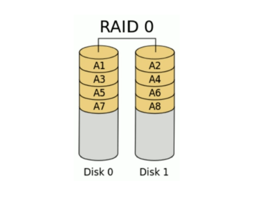
读、写性能提升
可用空间：N*min(S1,S2,…)
无容错能力
最少磁盘数：1+
RAID-1 也称为镜像, 两组以上的N个磁盘相互作镜像，在一些多线程操作系统中能有很好的读取速度，理论上读取速度等于硬盘数量的倍数，与RAID 0相同。另外写入速度有微小的降低。
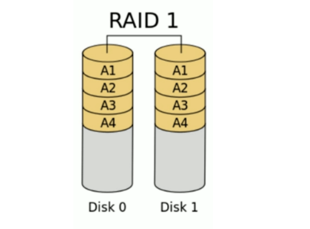
读性能提升、写性能略有下降
可用空间：1*min(S1,S2,…)
磁盘利用率 50%
有冗余能力
最少磁盘数：2+
RAID-4 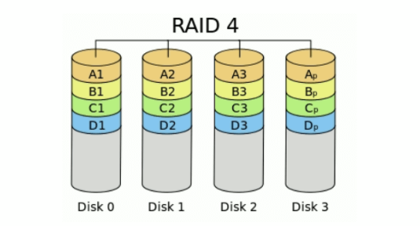
多块数据盘异或运算值存于专用校验盘
磁盘利用率 (N-1)/N
有冗余能力
至少3块硬盘才可以实现
RAID-5 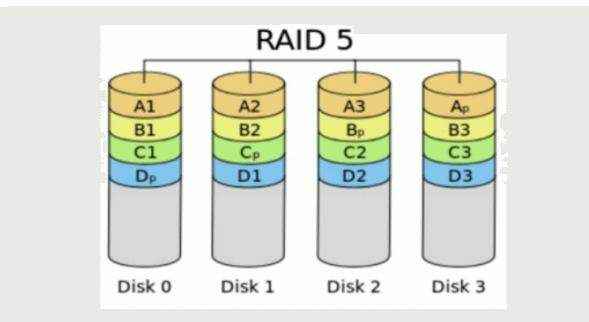
读、写性能提升
可用空间：(N-1)*min(S1,S2,…)
有容错能力：允许最多1块磁盘损坏
最少磁盘数：3, 3+
RAID-6 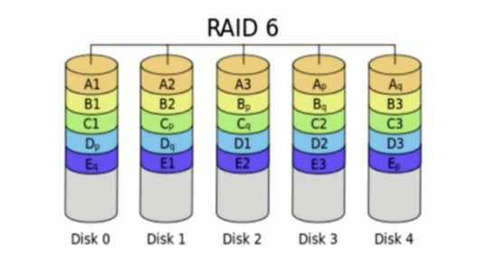
双份校验位,算法更复杂
读、写性能提升
可用空间：(N-2)*min(S1,S2,…)
有容错能力：允许最多2块磁盘损坏
最少磁盘数：4, 4+
RAID-10 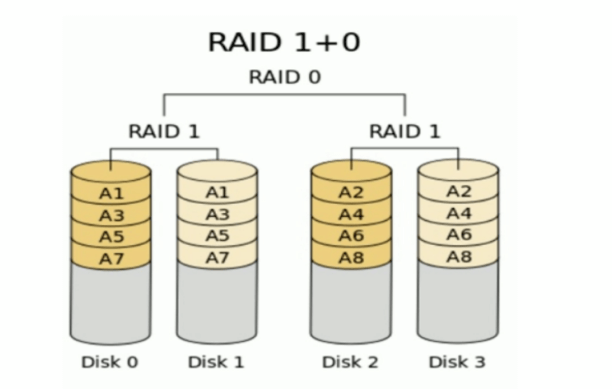
读、写性能提升
可用空间：N*min(S1,S2,…)/2
有容错能力：每组镜像最多只能坏一块
最少磁盘数：4, 4+
RAID-01 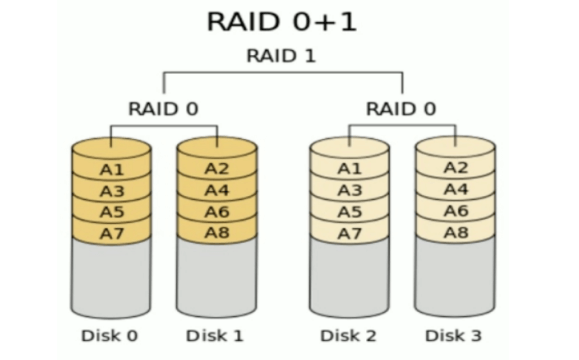
多块磁盘先实现RAID0,再组合成RAID1
RAID-50 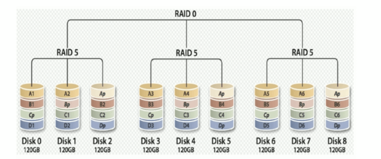
多块磁盘先实现RAID5,再组合成RAID0
RAID-60 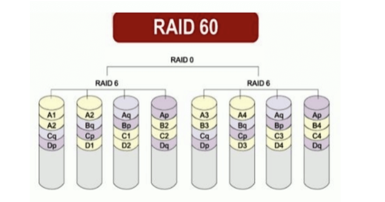
其它级别 JBOD：Just a Bunch Of Disks 只是一堆磁盘
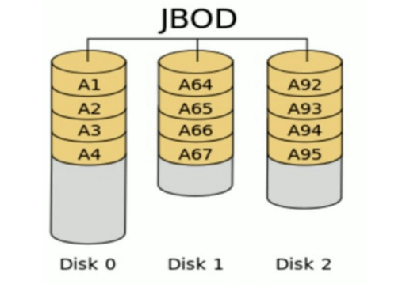
功能：将多块磁盘的空间合并一个大的连续空间使用
第一块硬盘存放所有磁盘的分段信息,如果损坏,整个阵列会失败
后续磁盘损坏只会影响本块磁盘的数据
可用空间：sum(S1,S2,…)
RAID7
RAID 7并非公开的RAID标准，而是美国公司的Storage Computer Corporation的专利硬件产品名称， RAID 7是以RAID 3及RAID 4为基础所发展，但是经过强化以解决原来的一些限制。另外，在实现中使用 大量的缓冲存储器以及用以实现异步数组管理的专用即时处理器，使得 RAID 7可以同时处理大量的IO要 求，所以性能甚至超越了许多其他RAID标准的实际产品。但也因为如此，在价格方面非常的高 昂.RAID7 可以理解为一个独立存储计算机，自身带有操作系统和管理工具，可以独立运行，理论上性能最高的RAID模式
SHR(Synology Hybrid RAID)
群晖公司的技术,适合不了解RAID的普通用户
根据磁盘个数自动组成不同的RAID,1块普通磁盘,2块RAID1,3块RAID4,SHR2类似于RAID6
只支持群晖系统
RAID 总结 常用级别：RAID-0, RAID-1, RAID-5, RAID-10, RAID-50,RAID-
RAID
最少
最大
可用
读性能
写性能
安全性
目的
应用
单一
1
0
1
1
1
无
JBOD
1
0
n
1
1
无（同RAID 0）
增加容量
个人(暂时)存储 备份
0
1
0
n
n
n
一块硬盘坏，全部硬盘 都会异常
追求最大容量、速度
影片剪接缓存 用途
1
2
n-1
1
n
1
高，一个正常即可
追求最大安全性
个人企业备份
5
3
1
n-1
n-1
n-1
高
追求最大容量、最小预算
个人企业备份
6
4
2
n-2
n-2
n-2
安全性较RAID5高
同RAID 5，但较安全
个人企业备份
10
4
高
综合RAID 0/1优点，理论 速度较快
大型数据库、 服务器
50
6
高
提升数据安全
60
8
高
提升数据安全
实现软RAID mdadm工具：为软RAID提供管理界面，为空余磁盘添加冗余，结合内核中的md(multi devices) RAID设备可命为/dev/md0、/dev/md1、/dev/md2、/dev/md3等
mdadm：模式化的工具,支持的RAID级别：LINEAR, RAID0, RAID1, RAID4, RAID5, RAID6, RAID10
命令的语法格式：
1 2 3 4 5 6 7 8 9 10 11 12 13 14 15 16 17 18 19 20 21 22 23 mdadm [mode] <raiddevice> [options] <component-devices> -C|--create -A|--assemble -F|--monitor -D|--detail -f -r -a <raiddevice> -C -n N -l N -a {yes |no} -c CHUNK_SIZE -x N <component-devices>
范例：
1 2 3 4 5 6 7 8 9 10 11 12 13 14 15 16 17 18 19 20 21 22 23 24 25 26 27 28 29 30 31 32 33 34 35 36 37 38 mdadm -C /dev/md0 -a yes -l 5 -n 3 -x 1 /dev/sd{b,c,d,e}1 mkfs.xfs /dev/md0 mdadm --detail|D /dev/md0 mdadm -G /dev/md0 -n4 -a /dev/sdf1 mdadm /dev/md0 -f /dev/sda1 mdadm /dev/md0 -r /dev/sda1 mdadm /dev/md0 -a /dev/sda1 cat /proc/mdstatmdadm -D -s >> /etc/mdadm.conf mdadm -S /dev/md0 mdadm -A -s /dev/md0 mdadm -R /dev/md0 dadm --zero-superblock /dev/sdb1
练习
创建一个可用空间为1G的RAID1设备，文件系统为ext4，有一个空闲盘，开机可自动挂载 至/backup目录
创建由三块硬盘组成的可用空间为2G的RAID5设备，要求其chunk大小为256k，文件系统为ext4， 开机可自动挂载至/mydata目录
逻辑卷管理器（LVM） LVM介绍 LVM: Logical Volume Manager 可以允许对卷进行方便操作的抽象层，包括重新设定文件系统的大小， 允许在多个物理设备间重新组织文件 系统
LVM可以弹性的更改LVM的容量
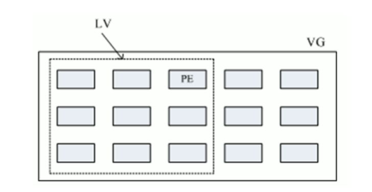
通过交换PE来进行资料的转换，将原来LV内的PE转移到其他的设备中以降低LV的容量，或将其他设备 中的PE加到LV中以加大容量
实现过程
将设备指定为物理卷
用一个或者多个物理卷来创建一个卷组，物理卷是用固定大小的物理区域（Physical Extent， PE）来定义的
在物理卷上创建的逻辑卷， 是由物理区域（PE）组成
可以在逻辑卷上创建文件系统并挂载
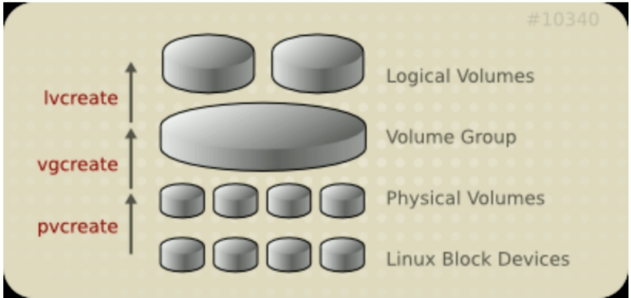
第一个逻辑卷对应设备名：/dev/dm-#
dm: device mapper，将一个或多个底层块设备组织成一个逻辑设备的模块
软链接：
/dev/mapper/VG_NAME-LV_NAME
/dev/VG_NAME/LV_NAME
范例
1 2 3 4 [root@rocky86 ~] lrwxrwxrwx 1 root root 7 Aug 1 09:38 /dev/mapper/rl-home -> ../dm-2 lrwxrwxrwx 1 root root 7 Aug 1 09:38 /dev/mapper/rl-root -> ../dm-0 lrwxrwxrwx 1 root root 7 Aug 1 09:38 /dev/mapper/rl-swap -> ../dm-1
实现逻辑卷 相关工具来自于 lvm2 包
pv管理工具 将块设备创建为物理卷，本质上就是给块设备打一个标签，
块设备数量和物理卷数量是对应的，有几个块设备，就可以创建几个物理卷，
块设备容量大小不限，可以跨分区。
显示pv信息
创建pv
删除pv
范例：
1 2 3 4 5 6 7 8 9 10 11 12 13 14 15 16 17 18 19 20 21 22 23 24 25 26 27 28 29 30 31 32 [root@rocky86 ~] Physical volume "/dev/sdb2" successfully created. Physical volume "/dev/sdc" successfully created. [root@rocky86 ~] PV VG Fmt Attr PSize PFree /dev/sda2 rl lvm2 a-- <199.00g 0 /dev/sdb2 lvm2 --- 5.00g 5.00g /dev/sdc lvm2 --- 10.00g 10.00g [root@rocky86 ~] "/dev/sdc" is a new physical volume of "10.00 GiB" --- NEW Physical volume --- PV Name /dev/sdc VG Name PV Size 10.00 GiB Allocatable NO PE Size 0 Total PE 0 Free PE 0 Allocated PE 0 PV UUID 4rZKNs-ca0S-Jp4G-zFzY-P8Up-KUG7-yFcZcg [root@rocky86 ~] Labels on physical volume "/dev/sdc" successfully wiped.
vg管理工具 显示卷组
创建卷组
1 2 3 vgcreate [-s Size ] vgname pv1 [pv2...]
管理卷组
1 2 vgextend vgname pv1 [pv2...] vgreduce vgname pv1 [pv2...]
删除卷组
删除vg之前，要先把对应的 pv 解除绑定 (pvmove)
范例：
1 2 3 4 5 6 7 8 9 10 11 12 13 14 15 16 17 18 19 20 21 22 23 24 25 26 27 28 29 30 31 32 33 [root@rocky86 ~] Volume group "testvg" successfully created [root@rocky86 ~] VG rl 1 3 0 wz--n- <199.00g 0 testvg 2 0 0 wz--n- <14.97g <14.97g [root@rocky86 ~] --- Volume group --- VG Name testvg System ID Format lvm2 Metadata Areas 2 Metadata Sequence No 1 VG Access read /write VG Status resizable MAX LV 0 Cur LV 0 Open LV 0 Max PV 0 Cur PV 2 Act PV 2 VG Size <14.97 GiB PE Size 16.00 MiB Total PE 958 Alloc PE / Size 0 / 0 Free PE / Size 958 / <14.97 GiB VG UUID Croa8U-P3lT-PpBY-kUaU-FvES-dWoT-eEGLOA
范例：扩展vg
1 2 3 4 5 6 7 8 9 10 11 12 13 14 15 16 17 18 [root@rocky86 ~] PV VG Fmt Attr PSize PFree /dev/sda2 rl lvm2 a-- <199.00g 0 /dev/sdb2 testvg lvm2 a-- 4.98g 272.00m /dev/sdb3 lvm2 --- 2.00g 2.00g /dev/sdc testvg lvm2 a-- 9.98g 4.98g [root@rocky86 ~] Volume group "testvg" successfully extended [root@rocky86 ~] PV VG Fmt Attr PSize PFree /dev/sda2 rl lvm2 a-- <199.00g 0 /dev/sdb2 testvg lvm2 a-- 4.98g 272.00m /dev/sdb3 testvg lvm2 a-- 1.98g 1.98g /dev/sdc testvg lvm2 a-- 9.98g 4.98g
lv管理工具 显示逻辑卷
创建逻辑卷
1 2 3 4 5 lvcreate {-L N[mMgGtT]|-l N} -n NAME VolumeGroup -L|--size N[mMgGtT] -l|--extents N -n Name
扩展逻辑卷
1 2 3 4 5 6 lvextend {-L N[mMgGtT]|-l N} LV_NAME -L|--size [+]Size[mMgGtT] -l|--extents [+]Number[PERCENT] -r|--resizefs
缩减逻辑卷
1 2 3 4 5 lvreduce {-L N[mMgGtT]|-l N} LV_NAME -L|--size [-]Size[mMgGtT] -l|--extents [-]Number[PERCENT]
删除逻辑卷
1 lvremove /dev/VG_NAME/LV_NAME
重设文件系统大小
修改了逻辑卷大小后，要同步文件系统
1 2 3 4 5 fsadm [options] resize device [new_size[BKMGTEP]] resize2fs [-f] [-F] [-M] [-P] [-p] lvname xfs_growfs /mountpoint
范例：创建lv
1 2 3 4 5 6 7 8 9 10 11 12 13 14 15 16 [root@rocky86 ~] Logical volume "lv1" created. [root@rocky86 ~] Logical volume "lv2" created. [root@rocky86 ~] Logical volume "lv3" created. [root@rocky86 ~] Logical volume "lv4" created.
范例：查看
1 2 3 4 5 6 7 8 9 10 11 12 13 14 15 16 17 18 19 20 21 22 23 24 25 26 27 [root@rocky86 ~] LV VG Attr LSize Pool Origin Data% Meta% Move Log Cpy%Sync Convert lv1 testvg -wi-a----- 1.56g lv2 testvg -wi-a----- 5.00g lv3 testvg -wi-a----- 1.67g lv4 testvg -wi-a----- 1.48g [root@rocky86 ~] --- Logical volume --- LV Path /dev/testvg/lv1 LV Name lv1 VG Name testvg LV UUID 57QkET-OpG0-kZlD-iRC9-YWmL-iaum-BtftfM LV Write Access read /write LV Creation host, time rocky86, 2022-08-01 14:27:52 +0800 LV Status available LV Size 1.56 GiB Current LE 100 Segments 1 Allocation inherit Read ahead sectors auto - currently set to 8192 Block device 253:3
逻辑卷的使用跟硬盘分区使用一样，要先创建文件系统，再进行挂载
扩展和缩减逻辑卷 在线扩展逻辑卷 扩展逻辑卷之前，要先保证卷组上还有空间
两步实现，先扩展逻辑卷，再扩容文件系统
1 2 3 4 5 6 7 8 9 lvextend -L [+]N[mMgGtT] /dev/VG_NAME/LV_NAME resize2fs /dev/VG_NAME/LV_NAME xfs_growfs MOUNTPOINT
一步实现容量和文件系统的扩展
1 lvresize -r -l +100%FREE /dev/VG_NAME/LV_NAME
缩减逻辑卷 注意：缩减有数据损坏的风险，建议先备份再缩减，不支持在线缩减，要先取消挂载，xfs文件系统不支持缩减
缩减流程
1 2 3 4 5 6 7 8 9 10 11 12 13 14 umount /dev/VG_NAME/LV_NAME e2fsck -f /dev/VG_NAME/LV_NAME resize2fs /dev/VG_NAME/LV_NAME N[mMgGtT] lvreduce -L [-] N[mMgGtT] /dev/VG_NAME/LV_NAME mount /dev/VG_NAME/LV_NAME mountpoint
简化缩减流程
1 2 3 umount /dev/VG_NAME/LV_NAME lvreduce -L N[mMgGtT] -r /dev/VG_NAME/LV_NAME mount /dev/VG_NAME/LV_NAME mountpoint
范例: 缩减XFS文件系统的逻辑
1 2 3 4 5 6 7 8 9 10 11 12 13 14 15 16 17 18 19 20 21 22 23 [root@centos8 ~] system [root@centos8 ~] [root@centos8 ~] [root@centos8 ~] [root@centos8 ~] [root@centos8 ~] [root@centos8 ~]
跨主机迁移卷组 源计算机上
1 在旧系统中，umount 所有卷组上的逻辑卷
2 禁用卷组
1 2 vgchange -a n vg0 lvdisplay
3 导出卷组
1 2 3 vgexport vg0 pvscan vgdisplay
4 拆下旧硬盘在目标计算机上,并导入卷组：
5 启用
6 mount 所有卷组上的逻辑卷
拆除指定的PV存储设备 1 2 3 4 5 6 7 8 9 10 11 12 13 14 15 16 17 18 19 20 21 22 23 24 25 26 27 28 29 30 31 32 33 34 35 36 37 38 39 40 41 42 43 44 45 46 47 48 49 50 51 52 53 54 55 56 57 58 59 60 61 62 63 64 65 66 67 68 69 70 71 72 73 74 75 76 77 78 79 80 81 82 83 84 85 86 [root@centos8 ~] --- Physical volume --- PV Name /dev/sda7 VG Name vg0 PV Size 3.00 GiB / not usable 4.00 MiB Allocatable yes PE Size 4.00 MiB Total PE 767 Free PE 255 Allocated PE 512 PV UUID rAYPLI-H4Or-Kz7L-44So-IZaD-vEbj-meOz7N --- Physical volume --- PV Name /dev/sdc VG Name vg0 PV Size 10.00 GiB / not usable 4.00 MiB Allocatable yes PE Size 4.00 MiB Total PE 2559 Free PE 2303 Allocated PE 256 PV UUID RDR8Ge-Oxb0-OrT2-CVj7-8doA-r5fo-hj4ZCm --- Physical volume --- PV Name /dev/sdb VG Name vg0 PV Size 20.00 GiB / not usable 4.00 MiB Allocatable yes PE Size 4.00 MiB Total PE 5119 Free PE 5119 Allocated PE 0 PV UUID Ky0f8z-qjVT-ikWZ-gfwL-H5d7-ZsZ2-NDcJ3v [root@centos8 ~] /dev/sdc: Moved: 0.78% /dev/sdc: Moved: 100.00% [root@centos8 ~] --- Physical volume --- PV Name /dev/sda7 VG Name vg0 PV Size 3.00 GiB / not usable 4.00 MiB Allocatable yes PE Size 4.00 MiB Total PE 767 Free PE 255 Allocated PE 512 PV UUID rAYPLI-H4Or-Kz7L-44So-IZaD-vEbj-meOz7N --- Physical volume --- PV Name /dev/sdc VG Name vg0 PV Size 10.00 GiB / not usable 4.00 MiB Allocatable yes PE Size 4.00 MiB Total PE 2559 Free PE 2559 Allocated PE 0 PV UUID RDR8Ge-Oxb0-OrT2-CVj7-8doA-r5fo-hj4ZCm --- Physical volume --- PV Name /dev/sdb VG Name vg0 PV Size 20.00 GiB / not usable 4.00 MiB Allocatable yes PE Size 4.00 MiB Total PE 5119 Free PE 4863 Allocated PE 256 PV UUID Ky0f8z-qjVT-ikWZ-gfwL-H5d7-ZsZ2-NDcJ3v [root@centos8 ~] Removed "/dev/sdc" from volume group "vg0" [root@centos8 ~] PV VG Fmt Attr PSize PFree /dev/sda7 vg0 lvm2 a-- <3.00g 1020.00m /dev/sdb vg0 lvm2 a-- <20.00g <19.00g /dev/sdc lvm2 --- 10.00g 10.00g [root@centos8 ~] Labels on physical volume "/dev/sdc" successfully wiped
逻辑卷快照 逻辑卷快照原理 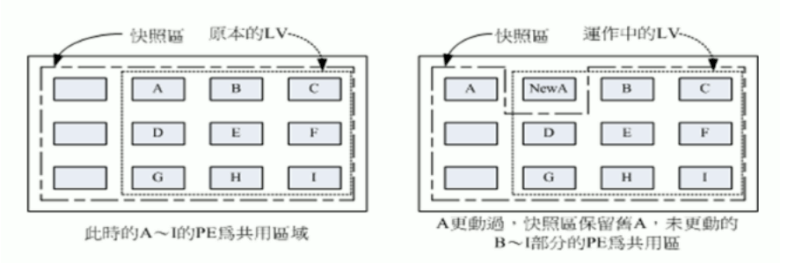
快照是特殊的逻辑卷，它是在生成快照时存在的逻辑卷的准确拷贝,对于需要备份或者复制的现有数据临时拷贝以及其它操作来说，快照是最合适的选择,快照只有在它们和原来的逻辑卷不同时才会消耗空间， 建立快照的卷大小小于等于原始逻辑卷,也可以使用lvextend扩展快照
逻辑卷管理器快照
快照就是将当时的系统信息记录下来，就好像照相一般，若将来有任何数据改动了，则原始数据会被移动到快照区，没有改动的区域则由快照区和文件系统共享
逻辑卷快照工作原理
在生成快照时会分配给它一定的空间，但只有在原来的逻辑卷或者快照有所改变才会使用这些空间
当原来的逻辑卷中有所改变时，会将旧的数据复制到快照中
快照中只含有原来的逻辑卷中更改的数据或者自生成快照后的快照中更改的数据
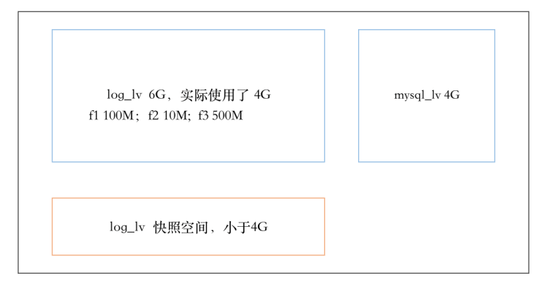
如果log_lv 中的文件不做任何修改，则快照空间为空
修改f1，第一次修改时，将修改前的f1推到快照，后面的修改不管
删除f2，将f2推送到快照
新建f3,不会被推送到快照
使用快照还原，则f1被还原，f2被还原，f3也没有了
由于快照区与原本的LV共用很多PE的区块，因此快照与被快照的LV必须在同一个VG中。系统恢复的时候的文件数量不能高于快照区的实际容量
快照特点:
备份速度快，瞬间完成
应用场景是测试环境，不能完全代替备份
快照后，逻辑卷的修改速度会一定有影响
实现逻辑卷快照 范例：
1 2 3 4 5 6 7 8 9 10 11 12 13 14 15 16 17 18 19 20 21 22 23 24 25 26 27 28 29 30 31 32 33 34 35 36 37 38 39 40 41 42 43 44 45 46 47 48 49 50 51 52 53 54 55 56 57 58 59 60 61 62 63 64 65 66 67 68 69 70 71 72 73 74 75 76 77 78 79 80 81 82 83 84 85 86 87 88 89 90 91 92 93 94 95 96 97 98 99 100 101 102 103 104 105 106 [root@loaclhost ~]$ lvs LV VG Attr LSize Pool Origin Data% Meta% Move Log Cpy%Sync Convert root cs -wi-ao---- <17.00g swap cs -wi-ao---- 2.00g log_lv testvg -wi-ao---- 6.00g mysql_lv testvg -wi-ao---- 4.00g [root@loaclhost ~]$ lvcreate -n mysql_snapshot -s -L 100M -p r /dev/testvg/mysql_lv Rounding up size to full physical extent 112.00 MiB Logical volume "mysql_snapshot" created. [root@loaclhost ~]$ lvs LV VG Attr LSize Pool Origin Data% Meta% Move Log Cpy%Sync Convert root cs -wi-ao---- <17.00g swap cs -wi-ao---- 2.00g log_lv testvg -wi-ao---- 6.00g mysql_lv testvg owi-aos--- 4.00g mysql_snapshot testvg sri-a-s--- 112.00m mysql_lv 0.01 [root@loaclhost ~]$lvdisplay /dev/testvg/mysql_snapshot /dev/testvg/mysql_lv --- Logical volume --- LV Path /dev/testvg/mysql_lv LV Name mysql_lv VG Name testvg LV UUID yru9Eg-Nexc-xZiH-x0YF-1WZc-A1cd-h6SQGI LV Write Access read /write LV Creation host, time loaclhost, 2022-05-10 14:21:21 +0800 LV snapshot status source of mysql_snapshot [active] LV Status available LV Size 4.00 GiB Current LE 256 Segments 1 Allocation inherit Read ahead sectors auto - currently set to 8192 Block device 253:2 --- Logical volume --- LV Path /dev/testvg/mysql_snapshot LV Name mysql_snapshot VG Name testvg LV UUID 9fxWYK-3y13-DHLI-Dvqk-maAI-60rl-80BpKo LV Write Access read only LV Creation host, time loaclhost, 2022-05-10 16:38:36 +0800 LV snapshot status active destination for mysql_lv LV Status available LV Size 4.00 GiB Current LE 256 COW-table size 112.00 MiB COW-table LE 7 Allocated to snapshot 0.01% Snapshot chunk size 4.00 KiB Segments 1 Allocation inherit Read ahead sectors auto - currently set to 8192 Block device 253:6 [root@loaclhost ~]$mkdir /mysql_snapshot [root@loaclhost ~]$mount /dev/testvg/mysql_snapshot /mysql_snapshot mount: /mysql_snapshot: WARNING: device write-protected, mounted read-only. [root@loaclhost ~]$ls /mysql/ /mysql_snapshot/ -il /mysql/: total 1048600 15 -rw-r--r-- 1 root root 4 May 10 16:37 abc 13 -rw-r--r-- 1 root root 1073741824 May 10 14:32 dd1 11 drwx------ 2 root root 16384 May 10 14:24 lost+found /mysql_snapshot/: total 1048600 15 -rw-r--r-- 1 root root 4 May 10 16:37 abc 13 -rw-r--r-- 1 root root 1073741824 May 10 14:32 dd1 11 drwx------ 2 root root 16384 May 10 14:24 lost+found [root@loaclhost ~]$ls /mysql/ /mysql_snapshot/ -il /mysql/: total 1048600 15 -rw-r--r-- 1 root root 30 May 10 16:22 abc 13 -rw-r--r-- 1 root root 1073741824 May 10 14:32 dd1 11 drwx------ 2 root root 16384 May 10 14:24 lost+found /mysql_snapshot/: total 1048600 12 -rw-r--r-- 1 root root 4 May 10 14:29 abc 13 -rw-r--r-- 1 root root 1073741824 May 10 14:32 dd1 11 drwx------ 2 root root 16384 May 10 14:24 lost+found
使用快照恢复
1 2 3 4 5 6 7 8 9 10 11 12 13 14 15 16 17 18 19 20 21 22 23 24 25 26 [root@loaclhost ~]$umount /mysql_snapshot [root@loaclhost ~]$umount /mysql [root@loaclhost ~]$lvconvert --merge /dev/testvg/mysql_snapshot Merging of volume testvg/mysql_snapshot started. testvg/mysql_lv: Merged: 100.00% [root@loaclhost ~]$mount /dev/testvg/mysql_lv /mysql [root@loaclhost ~]$ls /mysql -il total 1048600 15 -rw-r--r-- 1 root root 4 May 10 16:37 abc 13 -rw-r--r-- 1 root root 1073741824 May 10 14:32 dd1 11 drwx------ 2 root root 16384 May 10 14:24 lost+found [root@loaclhost ~]$lvs LV VG Attr LSize Pool Origin Data% Meta% Move Log Cpy%Sync Convert root cs -wi-ao---- <17.00g swap cs -wi-ao---- 2.00g log_lv testvg -wi-ao---- 6.00g mysql_lv testvg -wi-ao---- 4.00g
练习
创建一个至少有两个PV组成的大小为20G的名为testvg的VG；要求PE大小为16MB, 而后在卷组中创 建大小为5G的逻辑卷testlv；挂载至/users目录
新建用户archlinux，要求其家目录为/users/archlinux，而后su切换至archlinux用户，复 制/etc/pam.d目录至自己的家目录
扩展testlv至7G，要求archlinux用户的文件不能丢失
收缩testlv至3G，要求archlinux用户的文件不能丢失
对testlv创建快照，并尝试基于快照备份数据，验证快照的功能